Contents
- 1. Linear regression basics in matlab
- 2. Polynomial regression models
- 3. Weighted regression models
- 4. Robust estimation
- 5. Ridge regression
- 6. Transforming a nonlinear problem to linearity
- 7. Sums of exponentials
- 8. Poor starting values
- 9. Before you have a problem
- 10. Tolerances & stopping criteria
- 11. Common optimization problems & mistakes
- 12. Partitioned least squares estimation
- 13. Errors in variables regression
- 14. Passing extra information/variables into an optimization
- 15. Minimizing the sum of absolute deviations
- 16. Minimize the maximum absolute deviation
- 17. Batching small problems into large problems
- 18. Global solutions & domains of attraction
- 19. Bound constrained problems
- 20. Inclusive versus exclusive bound constraints
- 21. Mixed integer/discrete problems
- 22. Understanding how they work
- 23. Wrapping an optimizer around quad
- 24. Graphical tools for understanding sets of nonlinear equations
- 25. Optimizing non-smooth or noisy functions
- 26. Stochastic optimizers
- 27. Linear equality constraints
- 28. Sums of squares surfaces and the geometry of a regression
- 29. Confidence limits on a regression model
- 30. Confidence limits on the parameters in a nonlinear regression
- 31. Quadprog example, unrounding a curve
- 32. R^2
- 33. Estimation of the parameters of an implicit function
- 34. Robust fitting schemes
- 35. Homotopies
- 36. Orthogonal polynomial regression
- 37. Potential topics to be added or expanded in the (near) future
%{ Regression and optimization tips & tricks of the trade - using matlab and the optimization toolbox in ways that you may never have considered. Think of this text as a Matlab work book. I've included the tricks I see asked about many times on the comp.soft-sys.matlab newsgroup. If I've left out your favorite trick, just drop me a line and I'll try to add it in. This article is not intended as a FAQ however. Much of what I'll say in here has to do with curve-fitting and parameter estimation. It is after all a fertile source of optimization problems. I'll do my best to look at as many of the different optimizers as possible. This may help a novice optimizer to use the solutions found in this text as a set of templates for their problems. Is the order of the topics I've chosen important? I've tried to make it all flow as well as possible, but I won't always succeed. Feel free to skip to the section that holds your own interest. Apologies are due to my readers who live with a release of Matlab older than release 14. Almost all of the examples here are written using anonymous functions. Luckily, most of these examples will still be quite readable, so all may not be lost. If I hear enough requests I may be willing to expand these examples, including versions which are accessible to users of older releases. Using this workbook This text is written with matlab's cell mode in mind. Each section has blocks of executable code that are surrounded with a %% before and after. This allows you to execute that block directly in matlab. Anything that I want to say inside a block will be in the form of a matlab comment. Users of matlab releases that do not support cell mode can always use copy and paste to execute these blocks of matlab commands. I've also used the block comment form, %{ and %}, which became an option in release 14 of matlab. In effect, every line of this article is either an executable line of matlab code, or a valid matlab comment. Users of older releases will just have to forgive me once more. If you do have release 14 or beyond, then try "Publish to HTML". Its an option on the editor's file menu, or a button on the editor task bar. Give Matlab a minute or two to run through all of my examples, then matlab produces a nice document that can be read through at your leisure. %}
1. Linear regression basics in matlab
%{ I'll start with some linear regression basics. While polyfit does a lot, a basic understanding of the process is useful. Lets assume that you have some data in the form y = f(x) + noise. We'll make some up and plot it. %}
% Execute this cell. x = sort(rand(20,1)); y = 2 + 3*x + randn(size(x)); plot(x,y,'o') title 'A linear relationship with added noise'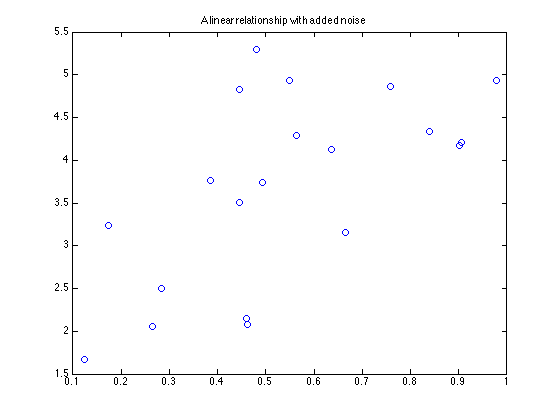
% We'd like to estimate the coefficients of this model from the data. % Many books show a solution using the normal equations. M = [ones(length(x),1),x]; % These are the normal equations. coef = inv(M'*M)*M'*y % coef contains regression estimates of the parameters yhat = M*coef; plot(x,y,'o',x,yhat,'-') title 'Linear regression model'
coef =
2.17390771984195
2.80896340206776
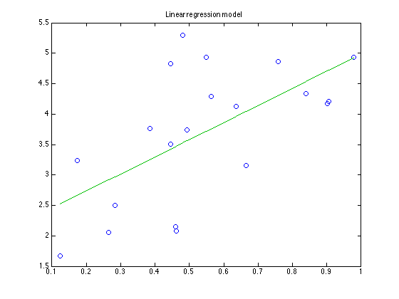 % A better solution uses \. Why? Because \ is more numerically % stable than is inv. Its something you will appreciate one day % when your data is nasty. In this case, the different methods % will be indistinguishable. Use \ anyway. disp 'Use of \' coef2 = M\y
Use of \
coef2 =
2.17390771984195
2.80896340206776
% Pinv is also an option. It too is numerically stable, but it % will yield subtly different results when your matrix is singular % or nearly so. Is pinv better? There are arguments for both \ and % pinv. The difference really lies in what happens on singular or % nearly singular matrixes. See the sidebar below. % Pinv will not work on sparse problems, and since pinv relies on % the singular value decomposition, it may be slower for large % problems. disp 'Use of pinv' coef3 = pinv(M)*y % Large-scale problems where M is sparse may sometimes benefit % from a sparse iterative solution. An iterative solver is overkill % on this small problem, but ... disp 'Use of lsqr' coef4 = lsqr(M,y,1.e-13,10) % There is another option, lscov. lscov is designed to handle problems % where the data covariance matrix is known. It can also solve a % weighted regression problem (see section 2.) disp 'Use of lscov' coef5 = lscov(M,y)
Use of pinv
coef3 =
2.17390771984195
2.80896340206776
Use of lsqr
lsqr converged at iteration 2 to a solution with relative residual 0.22.
coef4 =
2.17390771984192
2.80896340206775
Use of lscov
coef5 =
2.17390771984194
2.80896340206776
% Directly related to the \ solution is one based on the QR % factorization. If our over-determined system of equations to % solve is M*coef = y, then a quick look at the normal equations, % % coef = inv(M'*M)*M'*y % % combined with the qr factorization of M, % % M = Q*R % % yields % % coef = inv(R'*Q'*Q*R)*R'*Q'*y % % Of course, we know that Q is an orthogonal matrix, so Q'*Q is % an identity matrix. % % coef = inv(R'*R)*R'*Q'*y % % If R is non-singular, then inv(R'*R) = inv(R)*inv(R'), so % we can further reduce to % % coef = inv(R)*Q'*y % % Finally, recognize that this is best written in matlab % (especially for upper triangular R) as % % coef = R\(Q'*y) % % Why show this solution at all? Because later on, when we discuss % confidence intervals on the parameters, this will prove useful. disp 'Use of an explicit qr factorization' [Q,R] = qr(M,0); coef6 = R\(Q'*y)
Use of an explicit qr factorization
coef6 =
2.17390771984194
2.80896340206776
% Note that when we generated our data above, we added random noise % using the function randn. Randn generates uncorrelated Gaussian % (normally distributed) noise. In fact, the model that we chose % was the correct model for our data. In some cases the choice of % model will be only a guess. x2 = sort(rand(50,1)); y2 = 1 + 2*x2 - 4*x2.^2 + randn(size(x2))/10; % lets fit this data with our same linear model. M2 = [ones(length(x2),1),x2]; coef = M2\y2 % and plot the results yhat2 = M2*coef; plot(x2,y2,'o',x2,yhat2,'-') title 'Linear model through quadratic data'
coef =
1.66190922724002
-1.91685252994488
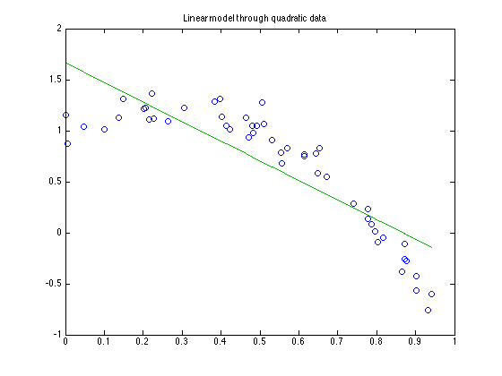 % Plotting the residuals shows the clear lack of fit in our model. % I'll leave any more discussion of basic regression analysis to a % good text on the subject. Draper and Smith, "Applied regression % Analysis" was always a favorite of mine. res2 = y2 - yhat2; plot(x2,res2,'o') title 'Residuals for a linear model through quadratic data'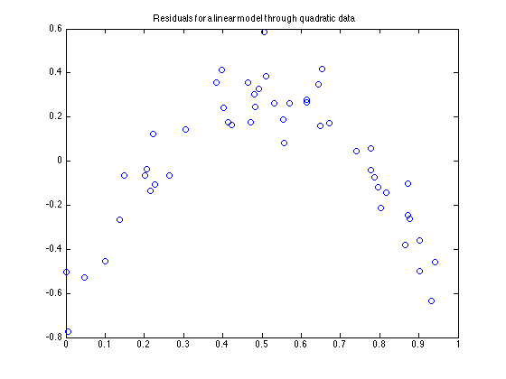
% Sidebar: Pinv uses a singular value decomposition, whereas \ % uses a qr factorization for non-square matrices. The difference? % lets try out the alternative solutions on a singular problem, % with no noise in the data. M = rand(10,2); M = M(:,[1 2 2]); y = sum(M,2); disp 'Singular matrix: pinv' coef1 = pinv(M)*y disp 'Singular matrix: \' coef2 = M\y disp 'Singular matrix: lsqr' coef3 = lsqr(M,y) disp 'Singular matrix: lscov' coef4 = lscov(M,y) % Lsqr produces a solution with pinv-like characteristics, while % lscov is clearly similar to \.
Singular matrix: pinv
coef1 =
1
1
1
Singular matrix: \
coef2 =
1
2
0
Singular matrix: lsqr
lsqr converged at iteration 2 to a solution with relative residual 7.1e-16.
coef3 =
0.999999999999999
0.999999999999999
0.999999999999999
Singular matrix: lscov
coef4 =
1
2
0
% Note that \ gave a warning of rank deficiency, and that since % the second and third columns of M were replicates, the two % solutions are really equivalent. Except that \ resulted in a % zero coefficient for the third column. Pinv has the property % that in the case of singularity, it will produce the minimum % norm solution. [norm(coef1),norm(coef2)] % Either solution [1 1 1]' or [1 2 0]' was equally valid, but the % pinv solution had a lower norm.
ans =
1.73205080756888 2.23606797749979
2. Polynomial regression models
%{ Arguably the most common linear regression model is the polynomial model. In a simple case, we may wish to estimate the coefficients (a and b) of the model y = a*x + b As I showed in the previous section, this is easily done using \, or any of a variety of other tools in matlab. We could also have done the regression estimation using polyfit. Note that polyfit returns its polynomial with terms in order from the highest power down. You can also build more general polynomial models, with your choice of terms, or in multiple dimensions using polyfitn. Its here on the file exchange: http://www.mathworks.com/matlabcentral/fileexchange/loadFile.do?objectId=10065&objectType=FILE %}
% A linear model estimated using polyfit
x = sort(rand(20,1));
y = 3*x + 2 + randn(size(x));
p = polyfit(x,y,1)
p =
3.23644140032245 1.9119866971841
3. Weighted regression models
%{ What do you do when you have weights? How should we interpret regression weights anyway? Suppose we knew one particular data point had much lower error than the rest. We might just choose to replicate that data point multiple times. That replicated point will drag the sums of squares of errors around. Lets try it out. %}
x = sort(rand(20,1)); y = 2 + 3*x + randn(size(x)); % replicating the point (1,5) 20 times nreps = 20; x2 = [x;ones(nreps,1)]; y2 = [y;repmat(5,nreps,1)]; % and solve M2 = [ones(size(x2)),x2]; coef = M2\y2 yhat = M2*coef; close plot(x2,y2,'o',x2,yhat,'-') title 'A weighted regression, weighting by replication' % note that the error in the replicated point was probably pretty % small, much lower than the rest of the data.
coef =
2.2494826780407
2.72082394326033
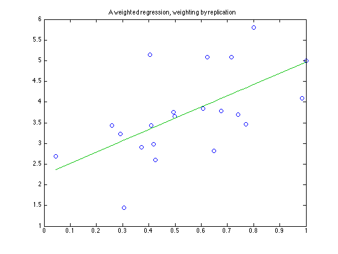 % We can emulate this point replication using a weighted regression. % Note the sqrt(nreps) in this approach to the weighted regression. x3 = [x;1]; y3 = [y;5]; nreps = 20; weights = [ones(size(y));sqrt(nreps)]; M3 = [ones(size(x3)),x3]; % Just multiply each row of M and the corresponding y by its weight. coef = (repmat(weights,1,2).*M3)\(weights.*y3)
coef =
2.24948267804069
2.72082394326033
% Weighted regression is one of the abilities of lscov.
weights = [ones(size(y));nreps];
coef = lscov(M3,y3,weights)
coef =
2.24948267804069
2.72082394326033
% Are regression weights really used as a description of the known % variance of your data? Clearly the examples above show that % weights are interpreted as a relative replication factor. Thus % a weight of k for a point is equivalent to having replicated the % given point k times. % Does this mean that a weighted regression with all its weights % equal to some large value will yield a different result? n=20; x = sort(rand(n,1)); y = 2 + 3*x + randn(size(x)); M = [ones(n,1),x]; % The unweighted result coef0 = lscov(M,y)
coef0 =
2.523956723686
1.7671419843655
% With weights all equal to 10 w = 10; weights = w*ones(n,1); coef1 = lscov(M,y,weights) % Likewise, any confidence limits derived for the model will also % be unchanged. % Thus weights in this context are PURELY relative weights. Doubling % all of the weights will not reflect any overall belief on your % part that the data is more accurate.
coef1 =
2.523956723686
1.7671419843655
4. Robust estimation
%{ Outliers are the source of many difficulties for estimation problems. Least squares estimation, linear or nonlinear, will be dragged around by points with large residuals. If these large residual points do not arise because of the expected normal distribution, but actually arise from some other distribution mixed in, then the least squares estimates may well be wildly off. In this case, some sort of trimming or iterative re-weighting scheme may be appropriate. Iterative re-weighting simply means to compute a regression model, then generates weights which are somehow inversely related to the residual magnitude. Very often this relationship will be highly nonlinear, perhaps the 5% of the points with the largest residuals will be assigned a zero weight, the rest of the points their normal weight. Then redo the regression model as a weighted regression. %}
n = 50; m = 5; x = rand(n,1); y = 2 + 3*x + randn(size(x))/10; % Now mix in a few outliers. Since the data is in random order, % just add some noise to the first few data points. y(1:m) = y(1:m) + exp(rand(m,1)*3); close plot(x,y,'o') title 'Outliers in the data'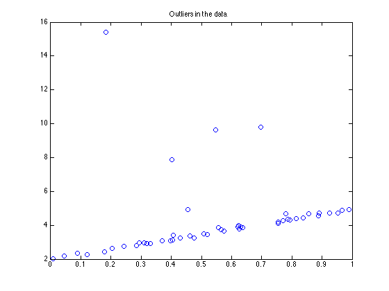
% Fit with a simple first order linear model
M = [ones(n,1),x];
coef0 = M\y
coef0 =
3.24488887943639
1.789094061095
% Compute the residuals for the current model, then make up some % weights based on the residuals, then fit. Iterate a few times. for i=1:3 res = M*coef0 - y; weights = exp(-3*abs(res)/max(abs(res)))'; % compute the weighted estimate using these weights coef1 = lscov(M,y,weights) coef0=coef1; end %{ This final estimate of coef1 will usually be closer to the known coefficients than the first (unweighted) estimate. I chose to a fairly arbitrary weight transformation. For those who are interested, potentially better choices may be found in one of these texts: "Robust Statistics", P.J. Huber "Data Analysis and Regression: A Second Course in Statistics", F. Mosteller, J.W. Tukey "Understanding Robust and Exploratory Data Analysis", D.C. Hoaglin %}
coef1 =
2.25536554252558
2.8142258522387
coef1 =
2.19602803108463
2.87775744075395
coef1 =
2.1930958098794
2.88092715406257
5. Ridge regression
%{ Ridge regression produces a biased estimator of the parameters compared to a simple linear regression, but biased estimators are not always a bad thing. %}
% Build some random data n = 10; x = randn(n,2); y = sum(x,2) + randn(n,1); % the coefficients of the regression model should be [1 1]', % since we formed y by summing the columns of x, then adding % noise to the result. coef = x\y
coef =
0.752858197185749
0.817955777516129
% if we generated many sets of data, we would see that with % few data points in each set and a large noise component, % our estimates of the parameters are fairly volatile. Don't % forget, the nominal coefficients were [1 1]'. coef = zeros(10,2); for i = 1:10 y = sum(x,2) + randn(n,1); coef(i,:) = (x\y)'; end coef
coef =
1.06348708335204 0.913732012838299
0.911160210282672 0.656826972247068
0.625200085633941 1.41074570989769
0.936206573495605 1.28343986362461
0.758908659800912 1.01529972304546
0.966747694984904 0.982929120031372
0.921871055385835 1.04458433381284
1.32077031943949 0.874815524032908
1.24363387117756 1.01108256035419
1.68140374226828 0.666276255719251
% Traditional ridge regression can be viewed & accomplished % in several ways. The pure linear regression is designed to % minimize the quadratic form (A*coef - y)'*(A*coef - y). % That is, it minimizes the sum of squares of the residuals % (A*coef - y). A ridge regression simply adds a term to that % objective: lambda*sum(coef.^2). Clearly when lambda is large, % the coefficient vector (coef) will be biased towards zero. % For small lambda, the ridge estimates will be largely % unchanged from the simple linear regression. % % There are two simple ways to accomplish this ridge regression. % The first is to use the normal equations. Recall that the % normal equations (to solve the system A*coef = y) are simply: % % coef = inv(A'*A)*A'*y % % The associated ridge estimates for a given value of lambda % are (for p parameters to estimate, in our example, p = 2.) % % coef = inv(A'*A + lambda^2*eye(p,p))*A'*y % % We can even think of the simple linear regression as a ridge % estimate with lambda = 0. % % As before, we never want to actually use the normal equations. % We can use \ or any other solver to accomplish this by % augmenting the matrix A. % % coef = [A;lambda*eye(p,p)] \ [y;zeros(p,1)] % % One way to interpret this expression is as if we had added % extra data points, each of which implies that one of the % parameters in the regression be zero. We can then think of % lambda as a weight for each of those new "data" points. p = 2; lambda = 1; coef = zeros(10,4); for i = 1:10 y = sum(x,2) + randn(n,1); coef(i,1:2) = (x\y)'; coef(i,3:4) = ([x;lambda*eye(p,p)]\[y;zeros(p,1)])'; end % The first two columns of coef are the standard regression % estimates. Columns 3 and 4 are ridge estimates. Note that % the ridge estimates are always biased towards zero. Had % we used a larger value of lambda, the bias would be more % pronounced. coef
coef =
0.496253462256749 1.13707145132561 0.485987211243643 1.08920956786233
0.399574165229737 1.19394692974287 0.402213991447085 1.13893130137714
1.20216376085243 1.14405727406539 1.11420487172632 1.1234353970831
0.58970542326009 1.17342216597955 0.570541611613071 1.12706962505611
0.985787124851172 1.2130006897726 0.924427383495209 1.17982172675411
0.964844317826578 0.65243909712157 0.883838097642781 0.651618848968238
0.454890448085156 1.19727754572469 0.451551181941961 1.14423175389261
0.641487265750168 1.05551996168894 0.611985531074068 1.01817445919978
1.34744004726189 1.00977802876719 1.23817541320071 1.00279510511485
1.30692245177028 0.804270293538292 1.19408229371848 0.80786394115225
% Simple ridge estimators rarely seem useful to me. The type % of bias (always towards zero) that they produce is often % not that helpful. % % There are other variations on the ridge estimator that can % be quite helpful however. To show this, we will build a % simple spline model - a piecewise constant model. Start % out, as always, with some data. n = 50; x = sort(rand(n,1)); y = sin(pi*x) + randn(size(x))/20; close plot(x,y,'o') title 'Data from a trig function'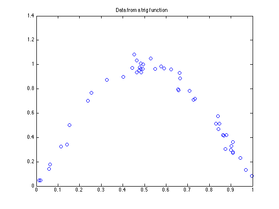
% Choose some knots knots = 0:.01:1; % p is the number of parameters we will estimate p = length(knots); % Build the regression problem - the least squares spline. % Define the spline in terms of its value in a given knot % interval. There are 50 data points and 101 knots. We need % to know which knot interval every point falls in. Histc % tells us that. (Old versions of matlab which do not have % histc can find bindex from the file exchange.) [junk,bind] = histc(x,knots); % Build the matrix as a sparse one! It is sparse, so use % that fact to our advantage. A = sparse((1:n)',bind,1,n,p); % solve for the least squares spline. Remember that we % had 101 knots, so 101 parameters to estimate. spl_coef = A\y plot(x,y,'go',[knots(1:(end-1));knots(2:end)], ... repmat(spl_coef(1:(end-1))',2,1),'r-') axis([0 1 -.2 1.2]) title 'Unregularized zero order "spline" model' xlabel 'x' ylabel 'y'
spl_coef =
0
0.046962438312442
0.0485034787799178
0
0
0.140754574520952
0.177873315574977
0
0
0
0
0.323783788784628
0
0
0.341311411291906
0.5006884879322
0
0
0
0
0
0
0
0.700183585999933
0
0.768518729755615
0
0
0
0
0
0
0.873541412960392
0
0
0
0
0
0
0
0.896750240676276
0
0
0
0.972599564678503
1.08181684646475
0.98479228955265
0.962866108879663
0.968931694672103
0.982907671444924
0
0
1.04840890291547
0
0.963371589138893
0
0
0.983464096343725
0
0.969669935103141
0
0
0.961577744595021
0
0
0.792927240211086
0.909156147321202
0
0
0
0.785142628792627
0
0.708847608376719
0.716384061228424
0
0
0
0
0
0
0
0
0.513961840820585
0
0.519495638121294
0
0.418931497669614
0.361249267461654
0
0.29570269311976
0.310385405351776
0
0
0
0.231187858680463
0
0
0.131258898779576
0
0.0837385481740156
0
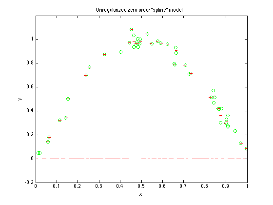 % When we looked at the coefficients for this spline, we should % have seen many coefficients that were zero. More than 1/2 of % them were zero in fact. Where there was no data, there the % spline was estimated as zero. There was also a warning of % "rank deficiency". Since there were only 50 data points, but % 101 knots (therefore 101 parameters to estimate) this was % expected. % % We can improve this dramatically with the use of a ridge % regression. Here I'll set up the bias so that each parameter % is biased to be close to its neighbors in the spline. B = spdiags(ones(p-1,1)*[-1 1],[0 1],p-1,p); % Solve. Try it with a reasonably small lambda. lambda = 1e-3; spl_coef_r = ([A;lambda*B]\[y;zeros(p-1,1)]) % This time, no zero coefficients, and no rank problems. plot(x,y,'go',[knots(1:(end-1));knots(2:end)], ... repmat(spl_coef_r(1:(end-1))',2,1),'r-') title 'Zero order spline model with minimal regularization' xlabel 'x' ylabel 'y' % This least squares spline, with only a tiny amount of a bias, % looks quit reasonable. The trick is that the regularization % term is only significant for those knots where there is no data % at all to estimate the spline. The information for those spline % coefficients is provided entirely by the regularizer. % We can make lambda larger. Try varying lambda in this block % of code on your own. You will see that lambda = 1 yields just % a bit more smoothing. Lambda = 10 or 100 begins to seriously % bias the result not towards zero, but to the overall mean of % the data! % There are other ways to do this regularization. We might also % choose to bias the integral of the second derivative of the % curve (for higher order splines.)
spl_coef_r =
0.0469624398535101
0.0469624398535101
0.0485035079892073
0.0792538656225786
0.11000422325595
0.140754580889321
0.177873307638342
0.207055399199701
0.23623749076106
0.265419582322419
0.294601673883777
0.323783765445136
0.329626365238789
0.335468965032442
0.341311564826095
0.500688353492317
0.5256252587096
0.550562163926884
0.575499069144168
0.600435974361452
0.625372879578735
0.650309784796018
0.675246690013302
0.700183595230585
0.734351152910942
0.768518710591299
0.783521952058007
0.798525193524715
0.813528434991424
0.828531676458132
0.843534917924841
0.858538159391549
0.873541400858257
0.876442507843165
0.879343614828073
0.882244721812981
0.885145828797888
0.888046935782796
0.890948042767703
0.89384914975261
0.896750256737518
0.915712606286423
0.934674955835328
0.953637305384234
0.972599654933139
1.08181664022345
0.984792327101705
0.962866122875552
0.968931697308904
0.982907675373796
1.00474139643692
1.02657511750005
1.04840883856315
1.00589023845906
0.963371638354975
0.970069119819707
0.97676660128444
0.983464082749172
0.976567011025985
0.969669939302797
0.96697252322708
0.964275107151364
0.961577691075649
0.905360902861717
0.849144114647785
0.792927326433853
0.909156073705147
0.878152710690986
0.847149347676826
0.816145984662666
0.785142621648506
0.746995137854543
0.70884765406058
0.716384031200695
0.693892679520486
0.671401327840277
0.648909976160068
0.626418624479859
0.60392727279965
0.58143592111944
0.558944569439231
0.536453217759022
0.513961866078813
0.516728743258563
0.519495620438313
0.469213557203926
0.418931493969539
0.361249279916126
0.328476010245906
0.295702740575686
0.310385396731265
0.290586008841006
0.270786620950749
0.250987233060476
0.231187845170205
0.197878199556491
0.164568553942777
0.131258908329054
0.107498740131619
0.0837385719341838
0.0837385719341838
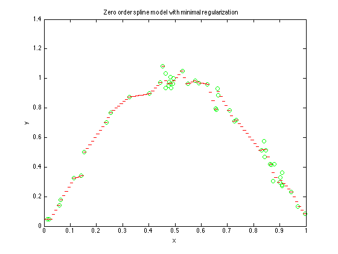 % There is one more question to think about when doing any % regularized regression: What is the correct value for lambda? % % Too small or too large, either is not good. In the middle is % just right. But where is Goldilocks when you need her? % % An answer can sometimes be found in cross validation. % This entails repeated fits, dropping out each data point in % turn from the fit, then predicting the dropped point from the % model. The ridge parameter (lambda) which results in the lowest % overall prediction error sum of squares is the choice to use. % A nice discussion of cross validation in its many forms can % be found here: % http://www.quantlet.com/mdstat/scripts/csa/html/node123.html % I'll show an example of ordinary cross validation (OCV) in % action for the same spline fit. First, we'll plot the prediction % error sums of squares (PRESS) as a function of lambda. nl = 21; lambda = logspace(-1,2,nl); press = zeros(1,nl); % loop over lambda values for the plot for i = 1:nl k = 1:n; % loop over data points, dropping each out in turn for j = 1:n % k_j is the list of data points, less the j'th point k_j = setdiff(k,j); % fit the reduced problem spl_coef = ([A(k_j,:);lambda(i)*B]\[y(k_j);zeros(p-1,1)]); % prediction at the point dropped out pred_j = A(j,:)*spl_coef; % accumulate press for this lambda press(i) = press(i) + (pred_j - y(j)).^2; end end % plot, using a log axis for x semilogx(lambda,press,'-o') title 'The "optimal" lambda minimizes PRESS' xlabel 'Lambda' ylabel 'PRESS' % Note: there is a minimum in this function near lambda == 1, % although it is only a slight dip. We could now use fminbnd % to minimize PRESS(lambda).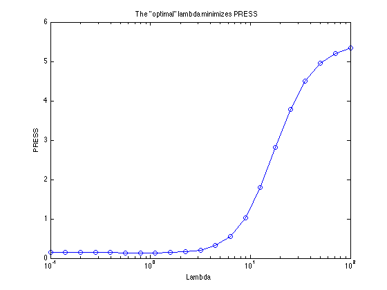
% I'll be lazy here, and guess from the plot that PRESS was % minimized roughly around lambda == 2. lambda = 2; spl_coef_r = ([A;lambda*B]\[y;zeros(p-1,1)]); % This time, no zero coefficients, and no rank problems. plot(x,y,'go',[knots(1:(end-1));knots(2:end)], ... repmat(spl_coef_r(1:(end-1))',2,1),'r-') title 'Zero order spline model with lambda == 2' xlabel 'x' ylabel 'y'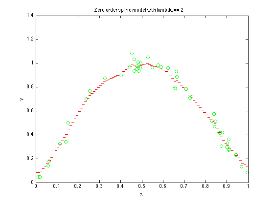
6. Transforming a nonlinear problem to linearity
%{ There are some simple nonlinear models which can be transformed into linearity. I'll talk about why you might do this, and what the problems are. Supposing that your model was this y = a * exp(b*t) Yes, I've left off the error "term", but I did so for a reason. We'd like to estimate a and b from some data, but the model is nonlinear in the parameters a and b. A trick that is often used is to take the log of our model. I.e., log(y) = log(a) + b*t We can now estimate the parameters log(a) & b using traditional linear regression techniques. Lets try it out on some numbers: %}
t = linspace(-1,1,21)'; y = pi*exp(1.5*t) + randn(size(t)); y(y<=0) = 1; % I won't want any negative numbers here! close plot(t,y,'o') title 'A nonlinear relationship to model' xlabel 't' ylabel 'y'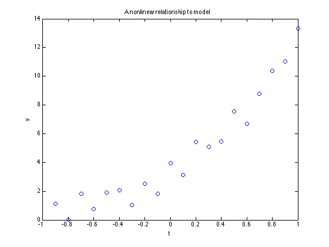
% Solve for the coefficients in our transformed problem coef1 = [ones(size(t)),t] \ log(y) % how well did we do? We can undo the transformation with a simple % exponentiation. The true value was pi. coef1(1) = exp(coef1(1))
coef1 =
0.873411326307344
2.02275905024803
coef1 =
2.39506728953476
2.02275905024803
% Is this the right thing to do? Well its not always bad. In fact, % its a trick I've often used to get good starting values, but it % plays a little trickily with the error structure in our problem. % % When we logged the basic model, we forgot that we actually had % added in error to y. But fitting the logged model does not treat % this error properly. In fact, fitting the logged model implicitly % assumes that we have a lognormal error structure, i.e, proportional % error. If we had proportional, lognormal error, then logging the % model turns the noise into normally distributed noise. % % Estimating the simple exponential parameters directly is not really % that hard anyway. Lets do it with lsqcurvefit: fun = @(coef,xdata) coef(1)*exp(coef(2)*xdata); c0 = [1 2]; coef2 = lsqcurvefit(fun,c0,t,y) % These parameters may be more accurate since we implicitly assumed % the appropriate error model. yhat1 = coef1(1)*exp(coef1(2)*t); yhat2 = coef2(1)*exp(coef2(2)*t); plot(t,y,'ro',t,yhat1,'b-',t,yhat2,'g-') title 'Transformation versus a pure nonlinear regression' xlabel 't' ylabel 'y'
Local minimum possible.
lsqcurvefit stopped because the final change in the sum of squares relative to
its initial value is less than the default value of the function tolerance.
coef2 =
3.19981931198606 1.4258140001836
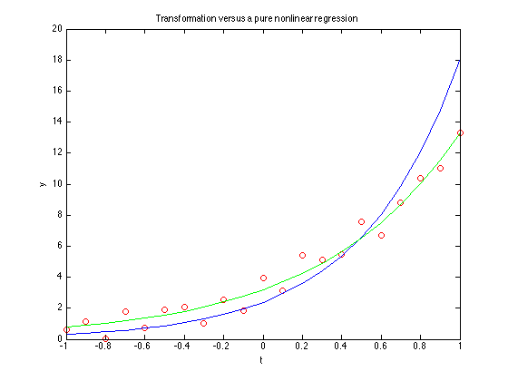 7. Sums of exponentials
%{ Our last examples were exponential models, so lets talk about sums of exponentials. It can't be that bad, can it? Suppose your model is of the form: y = a1*exp(a2*t) + a3*exp(a4*t) + a5*exp(a6*t) + ... + noise The Jacobian matrix is what matters, and a measure of whether you will have problems is the condition number of that matrix. Large condition numbers are bad. The Jacobian matrix is the matrix of partial derivatives of the parameters. Thus for each data point, differentiate the model with respect to each parameter. For a linear model, this is a trivial matter. Since it is always useful to have a baseline, lets look at what happens first for a simple polynomial model. %}
% Choose 21 points, running from -1 to 1. The order of the model % will be p. n = 21; x = linspace(-1,1,n)'; M = ones(n,1); format short g for p = 1:15 M = [M,x.^p]; k = cond(M); disp([p,k]) end % Even for a 15th order polynomial model, the condition number % was only 565000.
1 1.6514
2 3.5132
3 7.5132
4 17.194
5 38.897
6 91.935
7 216.13
8 528.7
9 1294.9
10 3306.5
11 8518.8
12 23032
13 63498
14 1.8592e+05
15 5.6463e+05
% A sum of exponentials. For simplicity, I'll set all the % coefficients a1 = a3 = a5 = ... = 1, leaving the model % as simply % % y = exp(a2*t) + exp(a4*t) + exp(a6*t) + ... + noise % % The Jacobian matrix is very simple to generate. n = 21; x = linspace(-1,1,n)'; c0 = linspace(1,2,8); M = []; for p = 1:8 M = [M,x.*exp(c0(p)*x)]; k = cond(M); disp([p,k]) end % Note how the condition number increases as we add terms.
1 1
2 43.344
3 1074.6
4 41005
5 1.0827e+06
6 3.9871e+07
7 1.1098e+09
8 4.1009e+10
8. Poor starting values
%{ Robustness of an optimizer to poor starting values is a nice goal, but simply choosing the best possible starting values is always valuable. I'll note that variable partitioning is often a big help for least squares problems. By reducing the dimensionality of the search space, robustness almost always improves. Very often the sign of a parameter is important. For example, in an exponential model, if the rate parameter is given a starting value with the wrong sign I have very often seen optimizations converge to a local optimum with clearly the incorrect curve shape. Likewise, constraints will often help prevent an optimizer from diverging into known bad places. For example, suppose we chose to fit a Gaussian-like mode to a singly peaked set of spectral data, ranging in wavelength from 400 to 700 nm. We might logically require that the peak of the Gaussian lies within the range of our data, and that the spread parameter must be not only non-negative, but greater than some small positive value. If one is using an optimizer to optimize the knot placement for splines, forcing the knots to be distinct by some tolerance is also a good idea. There are tricks one can use to choose good starting values. Section 5 in this text discusses the idea of a linearization by logging a model. This will probably give reasonable starting estimates. Other linearizations might not be so helpful however. For example, a simple first order Taylor series approximation to an objective will not show any real gain when used to choose starting values for a Newton derived method. This is because methods like Gauss-Newton simply use that same truncated Taylor series approximation in their iterations. So that Taylor series approximation was nothing more than an initial iteration of the Newton's method. Starting values derived in this fashion will probably gain no more than a single iteration of the optimizer. See the section on global optimization and basins of attraction for more on these topics. %}
9. Before you have a problem
%{ There are many options for the different solvers in the optimization toolbox. These are all available through the function optimset. The very first (and most important) option that one should learn to use is the 'Display' option. I make it a point that virtually EVERY optimization I do always runs initially with this property set to 'iter'. Only when I'm comfortable that the code is running properly do I revert this setting to one less verbose. Another useful tool provided in the optimset options is the DerivativeCheck property. When set to 'on', it computes a finite difference approximation to a user supplied gradient, then compares the two and reports significant differences. %}
10. Tolerances & stopping criteria
%{ A very common question posed by beginner optimizers is "What do the different tolerance parameters mean?" I'll offer an explanation, but sometimes doing is better, so I'll build some examples too. Of course, the meaning of these parameters can sometimes be subtly different as they apply to the different optimizers. There are many ways to stop an optimization. You can control the total number of function evaluations allowed, or the total number of iterations. These two parameters are really a check on things getting out of control. Usually when your optimization stops because one of these limits is exceeded, its because there is a problem of some sort. Perhaps the objective function is particularly nasty, or the optimization is diverging to infinity on an unbounded problem. If your problem exceeds these limits, first check to see if there is a reason before just increasing the limits. The other main stopping criteria are on the parameter values and on the objective function values. We can choose to stop if the parameter values are unchanging, or if the objective function is unchanging. (In the case of a root finding problem, this would be a test to see if the objective was close enough to zero.) %}
% MaxIter versus MaxFunEvals: % The Rosenbrock function is a nice test of an optimizer. It has % a global minimizer at (x,y) = (1,1), and a curved valley. rosen = @(xy) (1-xy(1)).^2 + 105*(xy(2)-xy(1).^2).^2; xystart = [2 3]; xyfinal=fminunc(rosen,xystart,optimset('disp','final')) % Note the warning message: since we did not provide a gradient, % the default trust region method will not run. We could have % preempted this call by turning it off in the first place.
Local minimum found.
Optimization completed because the size of the gradient is less than
the default value of the function tolerance.
xyfinal =
1 0.99999
% This time I forced the use of the older style line search method % on fminunc. Lets look at the output of fminunc to understand what % is happening. I've intentionally turned the output on full to see % the meaning of these parameters. xyfinal=fminunc(rosen,xystart,optimset('disp','iter','LargeScale','off')) % Line search methods are fairly simple. At each iteration they % estimate the gradient using finite differences (a forward finite % difference, costing n additional function evaluations in n-dimensions.) % Then the code decides which direction to search along - a line search. % Finally, the code (approximately) minimizes the objective function % along this linear path through the parameter space. I.e., approximately % minimize the function with respect to alpha: f(xk + alpha*d), where % xk is the current iterate, d is the search direction, and alpha is % the stepsize. % % One nicety is that this line search need not be perfect. As long as % the objective is sufficiently improved along the search direction % before each iteration terminates, the overall optimization will % still converge. % % So each iteration of the optimizer will often require roughly n % function evaluations to compute the gradient, plus a few more to % do the line search. As the optimization proceeds, the optimizer begins % to "learn" the local general shape of the surface. Once enough such % learning has taken place, this often results in the first guess at % the length of the step it should take along the line to be a very % good guess. Note that in our example, the first step taken by the % optimizer was very short, but after that first iteration, most step % lengths were 1.0.
First-order
Iteration Func-count f(x) Step-size optimality
0 3 106 842
1 9 0.626817 0.000305443 18.1
2 12 0.563857 1 3.05
3 15 0.561853 1 0.389
4 24 0.558136 91 2.37
5 27 0.545372 1 5.51
6 30 0.506233 1 14.2
7 33 0.471195 1 15.6
8 36 0.355674 1 15.6
9 39 0.248604 1 5.35
10 45 0.20043 0.58528 11.3
11 48 0.134909 1 7.1
12 51 0.0854516 1 2.3
13 57 0.0715334 0.300108 6.91
14 60 0.0411281 1 3.9
15 63 0.0214963 1 2.16
16 66 0.0102299 1 2.52
17 72 0.00485075 0.400296 0.705
18 75 0.00202469 1 1.83
19 78 0.000813904 1 0.075
First-order
Iteration Func-count f(x) Step-size optimality
20 81 0.000301649 1 0.2
21 84 3.88762e-05 1 0.25
22 87 2.69531e-06 1 0.0511
23 90 5.08884e-09 1 0.000945
24 93 1.20161e-11 1 2.92e-05
Local minimum found.
Optimization completed because the size of the gradient is less than
the default value of the function tolerance.
xyfinal =
1 0.99999
% Eventually fminunc terminated on this function when the norm of % the gradient was smaller than indicated by TolFun. It had taken % 24 iterations, and 93 function evaluations to find the solution % on my computer. (Your exact numbers may vary on different computers % or versions of matlab or the optimization toolbox.) % % Had we lowered either MaxIter or MaxFunEvals, the optimization % would have terminated early with a warning to that effect. options = optimset('disp','iter','LargeScale','off','MaxIter',10); xyfinal=fminunc(rosen,xystart,options) % Note that this solution may be inadequate for your purposes. % % A good clue to the existence of a problem is the norm of the % gradient, as reported in the last column of the output. Since % a minimizer of a smooth objective function must have zero gradient % (unless there are constraints involved) a large gradient norm % may indicate that the optimization has terminated too soon. % (This value is available to the user in output.firstorderopt % from all nonlinear solvers.) % % This is not always true for optimizations which hit the limit % on maximum iterations, but I would always consider whether the % iteration limit may have been set too low on any problem which % hits this boundary.
First-order
Iteration Func-count f(x) Step-size optimality
0 3 106 842
1 9 0.626817 0.000305443 18.1
2 12 0.563857 1 3.05
3 15 0.561853 1 0.389
4 24 0.558136 91 2.37
5 27 0.545372 1 5.51
6 30 0.506233 1 14.2
7 33 0.471195 1 15.6
8 36 0.355674 1 15.6
9 39 0.248604 1 5.35
10 45 0.20043 0.58528 11.3
11 48 0.134909 1 7.1
Solver stopped prematurely.
fminunc stopped because it exceeded the iteration limit,
options.MaxIter = 10 (the selected value).
xyfinal =
1.3486 1.8073
% TolX: The default value for TolX is 1.e-6. We can change TolX % to see what happens. options = optimset('disp','iter','LargeScale','off','TolX',.001); xyfinal=fminunc(rosen,xystart,options) % Remember that the true minimizer is [1,1]. By greatly widening % the tolerance TolX to 1.e-3, the optimization has stopped very % early. The message that we see is an indication that fminunc % is stopping for this reason, although it is NOT true that fminunc % is confident that we are within 1.e-3 of the solution.
First-order
Iteration Func-count f(x) Step-size optimality
0 3 106 842
1 9 0.626817 0.000305443 18.1
2 12 0.563857 1 3.05
3 15 0.561853 1 0.389
Local minimum possible.
fminunc stopped because the size of the current step is less than
the selected value of the step size tolerance.
xyfinal =
1.7493 3.062
% TolFun: fminunc treats TolFun as a tolerance on the gradient. % its default value is also 1e-6. Now widen TolFun to 1e-3. options = optimset('disp','iter','LargeScale','off','TolFun',.001); xyfinal=fminunc(rosen,xystart,options) % Again, the optimization terminates early and far away from the % true solution.
First-order
Iteration Func-count f(x) Step-size optimality
0 3 106 842
1 9 0.626817 0.000305443 18.1
2 12 0.563857 1 3.05
3 15 0.561853 1 0.389
Local minimum found.
Optimization completed because the size of the gradient is less than
the selected value of the function tolerance.
xyfinal =
1.7493 3.062
% However, there is NO exact relationship between these tolerances % and the final error in your result. % % In fact, tolerances are the cause of many errors of understanding % among new users of optimization tools. A parameter like TolX does % not ensure that the final estimated solution is within TolX of the % true value, or even within TolX of the global optimum. % % Likewise, reducing the value of TolFun need not reduce the error % of the fit. If an optimizer has converged to its global optimum, % reducing these tolerances cannot produce a better fit. Blood cannot % be obtained from a rock, no matter how hard one squeezes. The rock % may become bloody, but the blood came from your own hand.
11. Common optimization problems & mistakes
%{ Internal discretization Optimizations that have one or more of their variables as discrete entities cannot be done using solvers (such as fminsearch, fminunc, fmincon, etc.) that assume continuous variables. Sometimes however (imaging applications are especially likely to do this) there is also an internal discretization in the model. Anything that introduces such step discontinuities into an objective function will also invalidate the use of those same optimizers. You may be limited to algorithms (genetic algorithms, simulated annealing, etc.) which are tolerant of such behaviors. Discontinuities, derivative discontinuities As with the case of internal discretization, even the use of an absolute value function inside an objective function can cause a slope discontinuity of the objective function. Remember that an optimizer treats its objective like a black box. It can interrogate the box with various sets of parameters to see the result, but it does not truly understand anything about its objective function, and it does not know about or expect non-smooth behavior in that objective. Penalty function methods are another source of such problems, if the objective is set to an arbitrary large value when the parameters lie beyond some boundary. Problems with unavoidable discontinuities are best left to the domain of "simpler" tools, such as fminsearch, or even to the probabilistic tools such as genetic algorithms or simulated annealing. Complex objectives Optimizing over variables in the complex plane is best done by splitting the variables into their real and imaginary parts. Remember that a complex variable is really a vector quantity. In the case of complex objectives, the codes in the optimization toolbox all assume a real valued objective. In some cases an objective function suddenly becomes unintentionally complex, almost always due to a variable exceeding some natural mathematical boundary. log(x) or sqrt(x), where x is unconstrained, are common causes of this problem. The solution here is to employ constraints on the optimizer to prevent overrunning that boundary. A nice tool for debugging the occurrence of Inf, NaN, or complex numbers in an objective is the FunValCheck property. When set to 'on', it will stop the optimization with an error message indicating what happened. Since fminsearch and fminbnd can handle a value of inf, FunValCheck will not catch inf for those optimizers. Singular matrices Most of the optimizers in the optimization toolbox use linear algebra for their inner workings. The main exception of course is fminsearch, which uses a Nelder/Mead polytope algorithm. While that algorithm will never generate a singular matrix warning, it still will be harmed by the same problem flaws that induce these warnings in other methods. The singular matrix or rank deficiency warnings that appear from matlab optimizers are due to a variety of reasons. Usually it is a sign of a potential problem. (More depth to come on this subject.) %}
12. Partitioned least squares estimation
%{ You can find a description of partitioned or separable least squares in the book by Seber and Wild, "Nonlinear Regression". This url also describes the technique: http://64.233.161.104/search?q=cache:KmOn6r0gmn0J:www.statsci.org/smyth/pubs/eoe_nr.pdf+watts+partitioned+least+squares&hl=en&client=safari Lets return to that favorite model of ours - the exponential. We'll be creative and add in a constant term. y = a + b*exp(c*t) + noise There are three parameters to estimate in this model, but they are of two distinct fundamental classes. The parameters a and b are what we will call intrinsically linear parameters. They enter into the model in a linear fashion, in fact, this section will show you how to use linear regression to estimate them. The third parameter, c, would be called intrinsically nonlinear. It enters into the model in a nonlinear fashion. Lets make up some more data. %}
t = sort(rand(100,1)*2-1); y = 2 - 1*exp(-1.5*t) + randn(size(t))/10; close plot(t,y,'o') title 'Variable partitioning data' xlabel 't' ylabel 'y'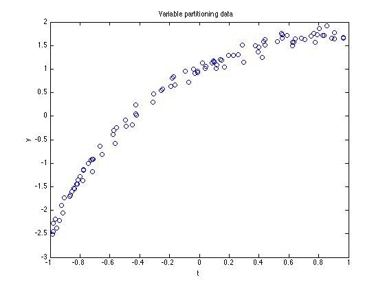
% and fit with lsqcurvefit fun = @(coef,t) coef(1) + coef(2)*exp(coef(3)*t) start = [1 2 3]; coef0 = lsqcurvefit(fun,start,t,y) yhat = fun(coef0,t); plot(t,y,'bo',t,yhat,'r-') title 'Convergence to a bad spot, due to a poor choice of starting values' xlabel 't' ylabel 'y'
fun =
@(coef,t)coef(1)+coef(2)*exp(coef(3)*t)
Solver stopped prematurely.
lsqcurvefit stopped because it exceeded the function evaluation limit,
options.MaxFunEvals = 300 (the default value).
coef0 =
-631 631.53 0.0032547
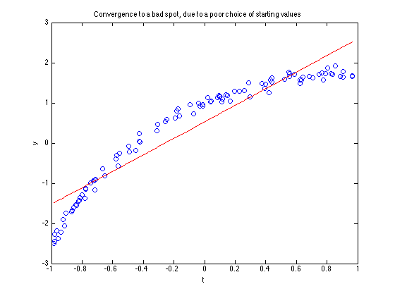 % We talked about poor starting values before. Here is a good % example. When we started off with the wrong sign for coef(3) % above, lsqcurvefit did not converge to the correct solution. % Lets try it again, just changing the sign on that third % coefficient. I'll set the display option to 'iter', so we % can see the number of iterations and function evals. start = [1 2 -3]; options = optimset('disp','iter'); coef0 = lsqcurvefit(fun,start,t,y,[],[],options) yhat = fun(coef0,t); plot(t,y,'bo',t,yhat,'r-') title 'A good fit, due to a better choice of starting values' xlabel 't' ylabel 'y' % This time it should have worked nicely. Its a common problem % with the sign of a parameter, especially common in the case of % exponential "rate" parameters.
Norm of First-order
Iteration Func-count f(x) step optimality CG-iterations
0 4 24955.8 1.96e+04
1 8 1199.51 2.71231 2.95e+03 0
2 12 88.8978 0.639966 446 0
3 16 1.523 0.824292 2.92 0
4 20 1.523 0.447022 2.92 0
5 24 1.27912 0.111756 1.94 0
6 28 1.05844 0.223511 4.61 0
7 32 0.976474 0.144198 1.56 0
8 36 0.969774 0.00473816 0.00285 0
9 40 0.969774 2.2126e-05 3.17e-07 0
Local minimum found.
Optimization completed because the size of the gradient is less than
the default value of the function tolerance.
coef0 =
2.0296 -1.0367 -1.4753
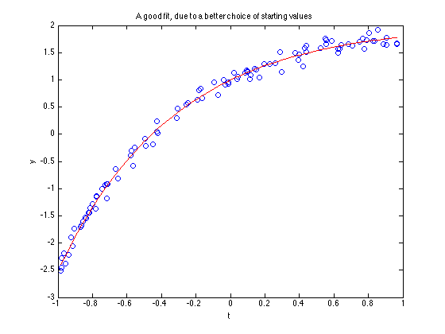 % Suppose however, I told you the value of the intrinsically % nonlinear parameter that minimized the overall sums of squares % of the residuals. If c is known, then all it takes is a simple % linear regression to compute the values of a and b, GIVEN the % "known" value of c. In essence, we would compute a and b % conditionally on the value of c. We will let an optimizer % choose the value of c for us, but our objective function will % compute a and b. You should recognize that since the linear % regression computes a sum of squares minimizer itself, that % when the optimization has converged for the intrinsically % nonlinear parameter that we will also have found the overall % solution. % % The function pleas is a wrapper around the lsqnonlin function, % it takes a list of functions, one for each intrinsically % linear parameter in the model. This model is of the form % % y = a*1 + b*exp(c*t) % % So there are two linear parameters (a,b), and one nonlinear % parameter (c). This means there will be a pair of functions % in funlist, the scalar constant 1, and exp(c*t) funlist = {1, @(coef,t) exp(coef*t)}; NLPstart = -3; options = optimset('disp','iter'); [INLP,ILP] = pleas(funlist,NLPstart,t,y,options) % Note how much more rapidly pleas/lsqnonlin has converged % (with only 1 nonlinear parameter to estimate) compared to % lsqcurvefit (with 3 parameters it had to estimate.) % % Also note that the final sum of squares for pleas was slightly % lower than we saw for lsqcurvefit. This is may be due to % the use of a linear regression to estimate better values for % the intrinsically linear parameters. % plot the curve yhat = fun([ILP;INLP],t); plot(t,y,'bo',t,yhat,'r-') title 'Pleas is faster, and robust against poor starting values' xlabel 't' ylabel 'y'
Norm of First-order
Iteration Func-count f(x) step optimality CG-iterations
0 2 10.3914 4.89
1 4 1.21182 1.71702 1.29 0
2 6 0.969897 0.187843 0.0278 0
3 8 0.969774 0.00446995 6.34e-05 0
4 10 0.969774 1.02172e-05 1.69e-07 0
Local minimum found.
Optimization completed because the size of the gradient is less than
the default value of the function tolerance.
INLP =
-1.4753
ILP =
2.0296
-1.0367
% We can verify that pleas is more robust to poor starting % values too. Start it with the rate parameter with a % different sign. NLPstart = 3; [INLP,ILP] = pleas(funlist,NLPstart,t,y,options)
Norm of First-order
Iteration Func-count f(x) step optimality CG-iterations
0 2 109.69 9.85
1 4 10.9281 3.35813 9.68 0
2 6 1.15336 0.949144 1.12 0
3 8 0.969843 0.164679 0.0207 0
4 10 0.969774 0.00333977 5.04e-05 0
5 12 0.969774 8.13156e-06 9.78e-08 0
Local minimum found.
Optimization completed because the size of the gradient is less than
the default value of the function tolerance.
INLP =
-1.4753
ILP =
2.0296
-1.0367
% I've now written a variation of pleas that is based on fminsearch, % called fminspleas. I've even added the ability to handle bound % constraints on the nonlinear parameters, using a similar trick % to that in fminsearchbnd. Find fminspleas here: % % http://www.mathworks.com/matlabcentral/fileexchange/loadFile.do?objectId=10093&objectType=FILE
13. Errors in variables regression
%{ Knowing your data is important in any modeling process. Where does the error arise? The traditional regression model assumes that the independent variable is known with no error, and that any measurement variability lies on the dependent variable. We might call this scenario "errors in y". Our model is of the form y = f(x,theta) + noise where theta is the parameter (or parameters) to be estimated. In other cases, the independent variable is the one with noise in it. y = g(x + noise,theta) If this functional relationship is simply invertible, then the best solution is to do so, writing the model in the form x = h(y,theta) + noise Now one applies standard regression techniques to the inverse form, estimating the parameter(s) theta. Why is this important? Lets do a simple thought experiment first. Suppose we have a simple linear model, y = a + b*x With no error in the data at all, our regression estimates will be perfect. Lets suppose there is some noise on the data points x(i). Look at the highest point in x. The extreme points will have the highest leverage on your estimate of the slope. If the noise on this is positive, moving x higher, then this point will have MORE leverage. It will also tend to bias the slope estimate towards zero. High values of x with noise which decreases their value will see their leverage decreased. A decrease in these values would tend to bias the slope away from zero. But remember that its the points with high leverage that affect the slope the most. The same effects happen in reverse at the bottom end of our data. The net effect is that errors in x will tend to result in slope estimates that are biased towards zero. Can we back this up with an experiment? %}
x = linspace(-1,1,201)'; y = 1 + x; coef0 = [ones(size(x)) , x]\y % as you would expect, the estimated parameters are exact (to % within double precision noise.)
coef0 =
1
1
% add some noise to x u = x + randn(size(x))/10; % while y is still known with no error coef1 = [ones(size(u)) , u]\y % as predicted, the second coefficient in this model was less than 1. % (Note that I am willing to make this prediction on random data.)
coef1 =
0.99661
0.95721
% Better would have been to form the model in its inverse form. % the constant term will be different, but the slope should still % be nominally 1.0 coef2 = [ones(size(y)) , y]\u
coef2 =
-1.0158
1.0194
% We can even try it several more times, just in case you don't % believe me. for i=1:10 u = x + randn(size(x))/10; coef1 = [ones(size(u)) , u]\y; coef2 = [ones(size(y)) , y]\u; disp(['Errors in x: ',num2str(coef1(2)),', ',num2str(coef2(2))]) end % Note that on every pass through this loop, the first slope % estimate tends to be uniformly less than 1, whereas the second % was fairly randomly above and below 1.0.
Errors in x: 0.97603, 0.99497 Errors in x: 0.96167, 1.0166 Errors in x: 0.95506, 1.0146 Errors in x: 0.96441, 1.0076 Errors in x: 0.97405, 1.0014 Errors in x: 0.97808, 0.99525 Errors in x: 0.97275, 0.99466 Errors in x: 0.96186, 1.0099 Errors in x: 0.98168, 0.99036 Errors in x: 0.98577, 0.98179
% The errors in variables problem is also known as Total Least % Squares. Here we wish to minimize the squared deviations of % each point from the regression line. We'll now assume that % both x and y have variability that we need to deal with. x = linspace(-1,1,101)'; y = 1 + 2*x; % add in some noise, the variance is the same for each variable. x = x + randn(size(x))/10; y = y + randn(size(x))/10; % if we use the basic \ estimator, then the same errors in x % problem as before rears its ugly head. The slope is biased % towards zero. coef0 = [ones(size(x)) , x]\y
coef0 =
1.0164
1.9653
% The trick is to use principal components. In this case we can % do so with a singular value decomposition. M = [x-mean(x),y-mean(y)]; [u,s,v] = svd(M,0); % The model comes from the (right) singular vectors. v1 = v(:,1); disp(['(x - ',num2str(mean(x)),')*',num2str(v1(2)), ... ' - (y - ',num2str(mean(y)),')*',num2str(v1(1)),' = 0']) % Only a little algebra will be needed to convince you that % this model is indeed approximately y = 1+2*x.
(x - -0.0036897)*0.89623 - (y - 1.0092)*0.44359 = 0
14. Passing extra information/variables into an optimization
%{ Many optimizations involve extraneous variables to the objective function. With respect to the optimizer, they are fixed, but the user may need to change these variables at will. A simple example comes from nonlinear root-finding. My example will use erf, a function for which an explicit inverse already exists. I'll give several solutions to passing in these extra variables. (One I will not recommend is the use of global variables. While they will work for this problem, I rarely like to use them when any other solution exists. There are many reasons for disliking globals, my favorite is the confusion they can sometimes cause in debugging your code.) The problem we will solve is computation of the inverse of y = erf(x) when y is known, and subject to change. %}
% 1. We can embed the parameters inside an anonymous function y = 0.5; fun = @(x) erf(x) - y; % solve using fzero start = 0; x = fzero(fun,start,optimset('disp','iter'))
Search for an interval around 0 containing a sign change:
Func-count a f(a) b f(b) Procedure
1 0 -0.5 0 -0.5 initial interval
3 -0.0282843 -0.531907 0.0282843 -0.468093 search
5 -0.04 -0.545111 0.04 -0.454889 search
7 -0.0565685 -0.563763 0.0565685 -0.436237 search
9 -0.08 -0.590078 0.08 -0.409922 search
11 -0.113137 -0.627119 0.113137 -0.372881 search
13 -0.16 -0.679012 0.16 -0.320988 search
15 -0.226274 -0.751032 0.226274 -0.248968 search
17 -0.32 -0.849126 0.32 -0.150874 search
19 -0.452548 -0.977827 0.452548 -0.0221726 search
21 -0.64 -1.13459 0.64 0.134586 search
Search for a zero in the interval [-0.64, 0.64]:
Func-count x f(x) Procedure
21 0.64 0.134586 initial
22 0.504266 0.0242407 interpolation
23 0.475072 -0.00167755 interpolation
24 0.476961 2.23256e-05 interpolation
25 0.476936 1.98246e-08 interpolation
26 0.476936 -6.66134e-16 interpolation
27 0.476936 0 interpolation
Zero found in the interval [-0.64, 0.64]
x =
0.47694
% To convince ourselves that fzero was successful, make a direct % call to erfinv. erfinv(y)
ans =
0.47694
% The value of y has been embedded in fun. If we choose to change y % we must redefine the anonymous function. y = -.5; fun = @(x) erf(x) - y; x = fzero(fun,start,optimset('disp','off'))
x =
-0.47694
% 2. An alternative is to pass in the value as an argument, passing % it through fzero. The optimizers in the optimization toolbox allow % the user to do so, by appending them after the options argument. % This is an undocumented feature, because the Mathworks would prefer % that we use anonymous functions. % Here fun is defined as a function of two variables, y is no % longer fixed at its value when the function is created. fun = @(x,y) erf(x) - y; y = 0.5; start = 0; x = fzero(fun,start,optimset('disp','off'),y) x = fzero(fun,start,optimset('disp','off'),-0.5)
x =
0.47694
x =
-0.47694
% 3. For those individuals who prefer inline functions over anonymous % functions, or who do not use release 14 or above, this solution % looks just like the one above. fun = inline('erf(x) - y','x','y'); y = 0.5; start = 0; x = fzero(fun,start,optimset('disp','off'),y) x = fzero(fun,start,optimset('disp','off'),-0.5)
x =
0.47694
x =
-0.47694
%{ 4. Using a nested function. Nested functions can only exist inside other functions (also only in release 14 and above), so I'll define a function that will enclose the nested function. Its naturally called testnestfun. This function is already saved as an m-file for your convenience. function x = testnestfun(y) function res = nestfun(x,yi) res = erf(x) - yi; end x = zeros(size(y)); start = 0; for i=1:prod(size(y)) yi = y(i); x(i) = fzero(@nestfun,start,optimset('disp','off')) end end % testnestfun terminator %} % Solve a series of inverse problems. x = [-.9:.1:.9]'; disp([x,testnestfun(x)])
-0.9 -1.1631
-0.8 -0.90619
-0.7 -0.73287
-0.6 -0.59512
-0.5 -0.47694
-0.4 -0.37081
-0.3 -0.27246
-0.2 -0.17914
-0.1 -0.088856
0 0
0.1 0.088856
0.2 0.17914
0.3 0.27246
0.4 0.37081
0.5 0.47694
0.6 0.59512
0.7 0.73287
0.8 0.90619
0.9 1.1631
15. Minimizing the sum of absolute deviations
%{ Minimizing the sums of squares of errors is appropriate when the noise in your model is normally distributed. Its not uncommon to expect a normal error structure. But sometimes we choose instead to minimize the sum of absolute errors. How do we do this? Its a linear programming trick this time. For each data point, we add a pair of unknowns called slack variables. Thus y(i) = a + b*x(i) + u(i) - v(i) Here the scalars a and b, and the vectors u and v are all unknowns. We will constrain both u(i) and v(i) to be non-negative. Solve the linear programming system with equality constraints as above, and the objective will be to minimize sum(u) + sum(v). The total number of unknowns will be 2+2*n, where n is the number of data points in our "regression" problem. %}
x = sort(rand(100,1)); y = 1+2*x + rand(size(x))-.5; close plot(x,y,'o') title 'Linear data with noise' xlabel 'x' ylabel 'y'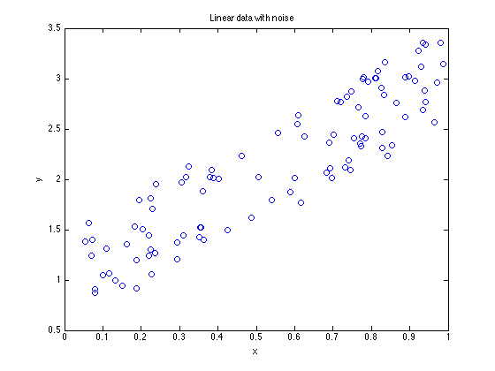
% formulate the linear programming problem. n = length(x); % our objective sums both u and v, ignores the regression % coefficients themselves. f = [0 0 ones(1,2*n)]'; % a and b are unconstrained, u and v vectors must be positive. LB = [-inf -inf , zeros(1,2*n)]; % no upper bounds at all. UB = []; % Build the regression problem as EQUALITY constraints, when % the slack variables are included in the problem. Aeq = [ones(n,1), x, eye(n,n), -eye(n,n)]; beq = y; % estimation using linprog params = linprog(f,[],[],Aeq,beq,LB,UB); % we can now drop the slack variables coef = params(1:2) % and plot the fit plot(x,y,'o',x,coef(1) + coef(2)*x,'-') title 'Linprog solves the sum of absolute deviations problem (1 norm)' xlabel 'x' ylabel 'y'
Optimization terminated.
coef =
0.93263
2.1653

16. Minimize the maximum absolute deviation
%{ We can take a similar approach to this problem as we did for the sum of absolute deviations, although here we only need a pair of slack variables to formulate this as a linear programming problem. The slack variables will correspond to the maximally positive deviation and the maximally negative deviation. (As long as a constant term is present in the model, only one slack variable is truly needed. I'll develop this for the general case.) Suppose we want to solve the linear "least squares" problem M*coef = y in a mini-max sense. We really don't care what the other errors do as long as the maximum absolute error is minimized. So we simply formulate the linear programming problem (for positive scalars u and v) min (u+v) M*coef - y <= u M*coef - y >= -v If the coefficient vector (coef) has length p, then there are 2+p parameters to estimate in total. %}
% As usual, lets make up some data. x = sort(rand(100,1)); y = pi - 3*x + rand(size(x))-.5; close plot(x,y,'o') title 'Linear data with noise' xlabel 'x' ylabel 'y'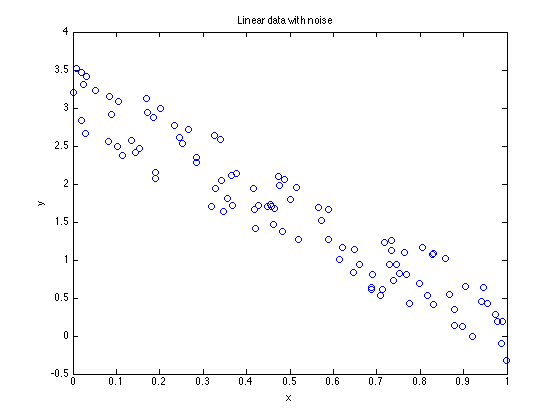
% Build the regression matrix for a model y = a+b*x + noise n = length(x); M = [ones(n,1),x]; % Our objective here is to minimize u+v f = [0 0 1 1]'; % The slack variables have non-negativity constraints LB = [-inf -inf 0 0]; UB = []; % Augment the design matrix to include the slack variables, % the result will be a set of general INEQUALITY constraints. A = [[M,-ones(n,1),zeros(n,1)];[-M,zeros(n,1),-ones(n,1)]]; b = [y;-y]; % estimation using linprog params = linprog(f,A,b,[],[],LB,UB); % strip off the slack variables coef = params(1:2)
Optimization terminated.
coef =
3.1515
-3.0474
% The maximum positive residual
params(3)
ans =
0.49498
% And the most negative residual
params(4)
ans =
0.48579
% plot the result plot(x,y,'o',x,coef(1) + coef(2)*x,'-') title 'Linprog solves the infinity norm (minimax) problem' xlabel 'x' ylabel 'y'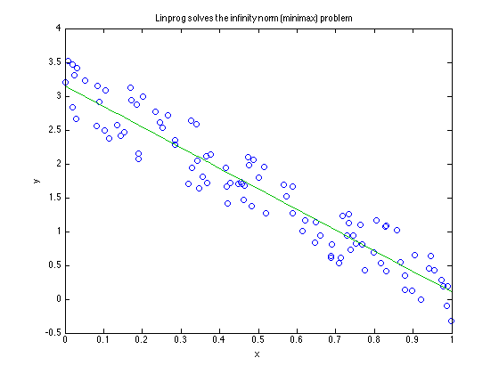
17. Batching small problems into large problems
%{ Suppose we wanted to solve many simple nonlinear optimization problems, all of which were related. To pick one such example, I'll arbitrarily decide to invert a zeroth order Bessel function at a large set of points. I'll choose to know only that the root lies in the interval [0,4]. %}
% Solve for x(i), given that y(i) = besselj(0,x(i)). n = 1000; y = rand(n,1); fun = @(x,y_i) besselj(0,x) - y_i; % first, in a loop tic x = zeros(n,1); for i=1:n x(i) = fzero(fun,[0 4],optimset('disp','off'),y(i)); end toc % as a test, compare the min and max residuals yhat = besselj(0,x); disp(['Min & max residuals: ',num2str([min(y-yhat),max(y-yhat)])]) % tic and toc reported that this took roughly 1.9 seconds to run on % my computer, so effctively 0.002 seconds per sub-problem.
Elapsed time is 1.931070 seconds. Min & max residuals: -2.7756e-16 2.498e-16
% Can we do better? Suppose we considered this as a multivariable % optimization problem, with hundreds of unknowns. We could batch % many small problems into one large one, solving all our problems % simultaneously. With the optimization toolbox, this is possible. % At least it is if we use the LargeScale solver in conjunction % with the JacobPattern option. % I'll use lsqnonlin because I chose to bound my solutions in the % interval [0,4]. Fsolve does not accept bound constraints. % define a batched objective function batchfun = @(x,y) besselj(0,x) - y; options = optimset('lsqnonlin'); options.Display = 'off'; options.Largescale = 'on'; options.TolX = 1.e-12; options.TolFun = 1.e-12; % I'll just put 50 problems at a time into each batch batchsize = 50; start = ones(batchsize,1); LB = zeros(batchsize,1); UB = repmat(4,batchsize,1); xb = zeros(size(y)); tic % note that this requires n to be an integer multiple of batchsize % as I have written the loop, but that is easily modified if not. j = 1:batchsize; for i = 1:(n/batchsize) xb(j) = lsqnonlin(@(x) batchfun(x,y(j)),start,LB,UB,options); j = j + batchsize; end toc % This took 2.2 seconds on my computer, roughly the same amount % of time per problem as did the loop, so no gain was achieved.
Elapsed time is 1.984180 seconds.
% Why was the call to lsqnonlin so slow? Because I did not tell % lsqnonlin to expect that the Jacobian matrix would be sparse. % How sparse is it? Recall that each problem is really independent % of every other problem, even though they are all related by % a common function we are inverting. So the Jacobian matrix % here will be a diagonal matrix. We tell matlab the sparsity % pattern to expect with JacobPattern. % Lets add that information and redo the computations. Only, this % time, I'll do all of the points at once, in one single batch. tic batchsize = 1000; start = ones(batchsize,1); LB = zeros(batchsize,1); UB = repmat(4,batchsize,1); xb = zeros(size(y)); j = 1:batchsize; options.JacobPattern = speye(batchsize,batchsize); xb = lsqnonlin(@(x) batchfun(x,y),start,LB,UB,options); toc
Elapsed time is 0.071789 seconds.
% The batched solution took only 0.092 seconds on my computer for % all 1000 subproblems. Compare this to the 1.9 seconds it took when % I put a loop around fzero. % % How did the solutions compare? They are reasonably close. std(x - xb) % Why is there such a significant difference in time? Some of the gain % comes from general economies of scale. Another part of it is % due to the efficient computation of the finite difference % approximation for the Jacobian matrix.
ans = 6.2945e-11
% We can test the question easily enough by formulating a problem % with simple derivatives. I'll kill two birds with one stone by % showing an example of a batched least squares problem for % lsqcurvefit to solve. This example will be a simple, single % exponential model. % One important point: when batching subproblems together, be careful % of the possibility of divergence of a few of the subproblems, % since the entire system won't be done until all have converged. % Some data sets may have poor starting values, allowing divergence % otherwise. The use of bound constraints is a very good aid to % avoid this bit of nastiness. n = 100; % n subproblems m = 20; % each with m data points % some random coefficients coef = rand(2,n); % negative exponentials t = rand(m,n); y = repmat(coef(1,:),m,1).*exp(-t.*repmat(coef(2,:),m,1)); y = y+randn(size(y))/10; % first, solve it in a loop tic expfitfun1 = @(coef,tdata) coef(1)*exp(-coef(2)*tdata); options = optimset('disp','off','tolfun',1.e-12); LB = [-inf,0]; UB = []; start = [1 1]'; estcoef = zeros(2,n); for i=1:n estcoef(:,i) = lsqcurvefit(expfitfun1,start,t(:,i), ... y(:,i),LB,UB,options); end toc
Elapsed time is 2.331607 seconds.
% next, leave in the loop, but provide the gradient. % fun2 computes the lsqcurvefit objective and the gradient. tic expfitfun2 = @(coef,tdata) deal(coef(1)*exp(-coef(2)*tdata), ... [exp(-coef(2)*tdata), -coef(1)*tdata.*exp(-coef(2)*tdata)]); options = optimset('disp','off','jacobian','on'); LB = [-inf,0]; UB = []; start = [1 1]'; estcoef2 = zeros(2,n); for i=1:n estcoef2(:,i) = lsqcurvefit(expfitfun2,start,t(:,i),y(:,i),LB,UB,options); end toc % I saw a 33% gain in speed on my computer for this loop.
Elapsed time is 1.379798 seconds.
% A partitioned least squares solution might have sped it up too. % Call expfitfun3 to do the partitioned least squares. lsqnonlin % seems most appropriate for this fit. tic options = optimset('disp','off','tolfun',1.e-12); LB = 0; UB = []; start = 1; estcoef3 = zeros(2,n); for i=1:n nlcoef = lsqnonlin('expfitfun3',start,LB,UB,options,t(:,i),y(:,i)); % Note the trick here. I've defined expfitfun3 to return % a pair of arguments, but lsqnonlin was only expecting one % return argument. The second argument is the linear coefficient. % Make one last call to expfitfun3, with the final nonlinear % parameter to get our final estimate for the linear parameter. [junk,lincoef]=expfitfun3(nlcoef,t(:,i),y(:,i)); estcoef3(:,i)=[lincoef,nlcoef]; end toc
Elapsed time is 1.410227 seconds.
% In an attempt to beat this problem to death, there is one more % variation to be applied. Use a batched, partitioned solution. tic % Build a block diagonal sparse matrix for the Jacobian pattern jp = repmat({sparse(ones(m,1))},1,n); options = optimset('disp','off','TolFun',1.e-13, ... 'JacobPattern',blkdiag(jp{:})); start = ones(n,1); LB = zeros(n,1); UB = []; nlcoef = lsqnonlin('expfitfun4',start,LB,UB,options,t,y); % one last call to provide the final linear coefficients [junk,lincoef]=expfitfun4(nlcoef,t,y); estcoef4 = [lincoef';nlcoef']; toc
Elapsed time is 0.192884 seconds.
18. Global solutions & domains of attraction
%{ Global optimization is a relatively hard problem to solve. Visualize an optimizer as a blindfolded person on the surface of the earth. Imagine that you have directed this individual to find the highest point on the surface of the earth. The individual can do so only by wandering around. He is given an altimeter to consult, so at any point he can compare his elevation with any previous point. And to make things harder, you have chosen to place this poor fellow on the Galapagos Islands to start. What are the odds that your subject would ever manage to discover the peak of Mount Everest? Clearly this is an impossible task. Global optimization of a general function in n-dimensions is no easier, and often harder when the dimensionality gets large. %}
% So consider a smaller problem. Find all locally minimum values % of the function sin(x). close ezplot(@(x) sin(x),[-50,50]) title 'Global optimization when there are infinitely many solutions?' xlabel 'x' ylabel 'y' % This is an easier problem if we recall enough high school trig % to know that sin(x) is minimized at the points (n+1/2)*pi for % all odd integers n. For an optimizer its not so easy to find % an infinite number of minima. % Even better, all of these local minimizers are equivalent, in % the sense that they all yield the same function value.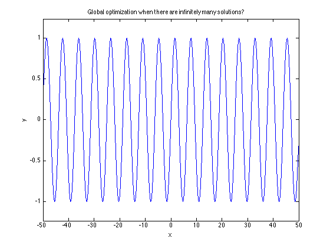
% Perhaps not so easy for you is to find all local minimizers on % the real line of the first order Bessel function. ezplot(@(x) besselj(1,x),[-20,20]) title 'Global optimization when there are infinitely many solutions?' xlabel 'x' ylabel 'y' % The minima that we see in this plot are not all equivalent.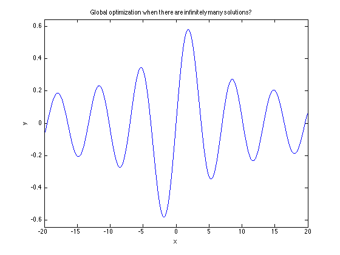
% Remember our blindfolded friend? Suppose that we felt some % compassion in his plight, instead setting him down on the % North face of Mt. Everest (please do it on an especially warm % day.) Clearly given better "starting values", our poor frozen % subject may indeed even have a chance at success. % This brings to mind an interesting idea though. It is a concept % called a basin of attraction. For any given optimization problem % and specific optimizer, each local minimizer will have its own % basin of attraction. A basin of attraction is the set of all % points which when used as a starting value for your chosen % optimizer, will converge to a given solution. Just for kicks, % lets map out the basins of attraction for the optimizer % when applied to the first order Bessel function. % Do it using a simple loop over a variety of starting values. xstart = -20:.1:20; xfinal = zeros(size(xstart)); bessfun = @(x) real(besselj(1,x)); for i = 1:length(xstart) xfinal(i) = fminsearch(bessfun,xstart(i)); end subplot(1,2,1) plot(xstart,xfinal,'.') xlabel 'Starting point' ylabel 'Terminal point' grid on subplot(1,2,2) plot(xstart,bessfun(xfinal),'.') xlabel 'Starting point' ylabel 'Minimum value' grid on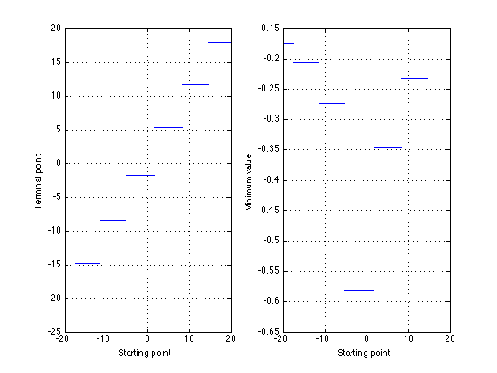
%{ We can use clustering techniques to group each of these solutions into clusters. k-means is one clustering method, although it requires advance knowledge of how many clusters to expect. If you choose to download my function "consolidator" from the file exchange, you can do a simple clustering without that knowledge in advance. (I'm tempted to include a copy with this text. However I'd prefer that you download the copy from the file exchange. In the event of any enhancements or bug fixes the online copy will be maintained at my most current version.) Here is the url to consolidator: http://www.mathworks.com/matlabcentral/fileexchange/loadFile.do?objectId=8354&objectType=file %} % consolidator(xfinal',[],'',.001)
ans =
-21.164
-14.864
-8.5363
-1.8412
5.3314
11.706
18.016
% Why all this talk about basins of attraction? I want to highlight % this basic behavior of most optimizers. They are simple search % tools that can do not much more than investigate their local % environment to decide where to look next. % % What can we do to improve the success rate of an optimizer on a % nasty function? Suppose we have a very flat function, with a deep % valley with steep sides at some location. The basin of attraction % for that local minimizer may well be very small. A trick that % works nicely in a probabilistic sense is to evaluate the objective % function at some random set of points. Choose some subset of the % best of these points as starting values for your favorite optimizer. % An example of using Monte Carlo starting values fun = @(p) -peaks(p(1),p(2)); n0 = 200; x0 = rand(n0,2)*6 - 3; z0 = zeros(n0,1); for i = 1:n0 z0(i) = fun(x0(i,:)); end % sort to find the best points from the set [z0,tags] = sort(z0); x0 = x0(tags,:); n1 = 25; xfinal = zeros(n1,2); for i = 1:n1 xfinal(i,:) = fminsearch(fun,x0(i,:)); end % now cluster the solutions. xfinal = consolidator(xfinal,[],'',.001) zfinal=zeros(size(xfinal,1),1); for i = 1:size(xfinal,1) zfinal(i) = peaks(xfinal(i,1),xfinal(i,2)); end % Consolidator identified 3 distinct clusters.
xfinal =
-0.46003 -0.62919
-0.0093172 1.5814
1.2857 -0.0048473
% plot these solutions on top of the peaks surface figure peaks(50) hold on plot3(xfinal(:,1),xfinal(:,2),zfinal,'bo') hold off
z = 3*(1-x).^2.*exp(-(x.^2) - (y+1).^2) ... - 10*(x/5 - x.^3 - y.^5).*exp(-x.^2-y.^2) ... - 1/3*exp(-(x+1).^2 - y.^2)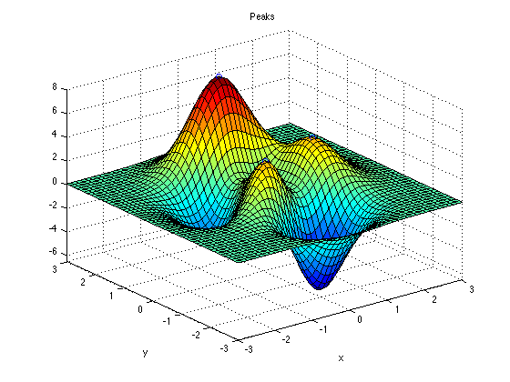
%{ A tool to help you manage randomly multi-started optimizations is RMSEARCH. Its on the file exchange: http://www.mathworks.com/matlabcentral/fileexchange/loadFile.do?objectId=13733&objectType=FILE A pretty example of fractal basins can be found at: http://www.mathworks.com/matlabcentral/fileexchange/loadFile.do?objectId=3235&objectType=FILE Try this example to start: Pctr = nrfrac(-1,1,-1,1,.005,50); %}
19. Bound constrained problems
%{ Optimization subject to constraints is nicely covered by a variety of tools and texts. I won't even try to do a better job. There are some days when you just don't want to roll out fmincon. Perhaps you have already got your problem working with fminsearch, but it occasionally tends to wander into a bad place. Bound constraints are the most common class of constraint to employ, and they are quite easy to implement inside an optimization problem. I could spend a fair amount of time here showing how to use Lagrange multipliers to solve constrained problems. You can find them in textbooks though. And some problems do well with penalties imposed on the objective function. I won't get into penalty function methods. Personally, I've never really liked them. They often introduce discontinuities into the objective function. Even so, then the optimizer may often step lightly over the bounds. The simple trick is to use a transformation of variables. Allow the optimizer to leave your variable unconstrained, but then inside the objective function you perform a transformation of the variable. If a variable must be positive, then square it. If it must lie in a closed interval, then use a sine transformation to transform an unbounded variable into one which is implicitly bounded. I'll give an example of such a transformation solution, then suggest that you look at fminsearchbnd from matlab central. Here is a url: (as with consolidator, I'd prefer that you download the file exchange copy, as it will always be the current version.) http://www.mathworks.com/matlabcentral/fileexchange/loadFile.do?objectId=8277&objectType=file %}
% As an example, lets find the minimum of a simple function of % two variables. This simple function, z = x^2 + y^2 is a % parabola of revolution. Its a simple conic form. fun = @(vars) vars(1).^2 + vars(2).^2 % its easy enough to minimize with fminsearch. The result is zero, % at least as well as fminsearch will solve it. format short g minxy = fminsearch(fun,rand(1,2))
fun =
@(vars)vars(1).^2+vars(2).^2
minxy =
-3.604e-05 1.3017e-05
% Now lets constrain the first variable to be >= 1. I'll define % a transformation of x, such that x = u^2 + 1. fun2 = @(vars) (vars(1).^2+1).^2 + vars(2).^2; minuy = fminsearch(fun2,rand(1,2)); % And after fminsearch is done, transform u back into x. % y was not transformed at all. minxy = [minuy(1).^2+1, minuy(2)] % This is the minimizer of our original function fun, subject to the % bound constraint that x>=1
minxy =
1 -4.0585e-05
% These transformation have been implemented in fminsearchbnd which % is really just a transparent wrapper on top of fminsearch. Try this % on the (well known, even famous) Rosenbrock function. rosen = @(x) (1-x(1)).^2 + 105*(x(2)-x(1).^2).^2; % with no constraints, fminsearch finds the point [1 1]. This is % global optimizer, with no constraints. xy = fminsearch(rosen,[3 4])
xy =
1 1
% minimize the Rosenbrock function, subject to the constraint that % 2 <= x <= 5 % 1.5 <= y LB = [2 1.5]; UB = [5 inf]; xy = fminsearchbnd(rosen,[3 4],LB,UB)
xy =
2 4
20. Inclusive versus exclusive bound constraints
%{ Why do we employ constraints at all in an optimization? A not uncommon reason is to enhance robustness of the optimizer to poor starting values. By fencing in the optimizer to the domain where we know the solution must exist, we improve the odds that it will find our preferred solution. A second reason is if some calculation in the objective function will suddenly begin to produce complex numbers as results. I.e., if x is a parameter in the optimization, and the first thing we do in the objective function is compute sqrt(x), then we want to avoid negative values for x. As soon as complex results are returned to an optimizer that expects to see only real values, you should expect trouble. Note that in this example, x = 0 is a perfectly valid parameter value, since sqrt(0) is still real. We may not be able to tolerate any penetration of the boundary at all, but the boundary itself is acceptable. This is what I would call a closed boundary, or an inclusive bound. Fminsearchbnd implements boundary constraints of this form and should not allow any excess. Beware however when using constraints. Some optimizers will allow the constraint to be violated by a tiny amount. Given the combination of linear algebra and floating point mathematics in an optimizer, its sometimes a hard thing to require that a bound never be exceeded. Sometimes however, we cannot even tolerate the boundary itself. A common example involves log(x). Whereas sqrt(0) still returns a useable result, log(0) returns -inf. The presence of an inf in your computation may well upset a less than clever optimizer. These boundaries could be called variously open, exclusive, or strict. The simplest solution to these problems is to offset your bound slightly. If x cannot go negative, then simply supply a boundary value of some small positive value that is acceptably close to zero. There are also transformations one can use to enforce an open boundary. Thus while u = x.^2 allows u to attain a value of 0, whereas u = exp(x) will never attain that value. For variables which have both lower and upper bounds, an atan transformation works reasonably well. In fact, experimentation on my part has shown that some such transformations work better than others. In my experience, the exponential transformation can sometimes cause numerical underflow or overflow problems. An atan transformation seems to approach its boundary more softly, avoiding many of those problems. %}
21. Mixed integer/discrete problems
%{ Many problems are inherently discrete. I won't get into that class of problems at all. However there are also problems of mixed class. Here one or more of the variables in the optimization are limited to a discrete set of values, while the rest live in a continuous domain. There are mixed solvers available, both on Matlab central and from other sources. What do you do when there are only a few possible discrete states to investigate? Probably best here is to simply fix the discrete variables at each possible state, then solve for the continuous variables. Then choose the solution which is best overall. %}
22. Understanding how they work
%{ While I will not even try to give a full description of how any optimizer works, a little bit of understanding is worth a tremendous amount when there are problems. True understanding can only come from study in some depth of an algorithm. I can't offer that here. Instead, I'll try to show the broad differences between some of the methods, and suggest when one might use one method over another. Previously in this text I've referred to optimizers as tools that operate on a black box, or compared them to a blindfolded individual on a hillside. These are useful analogies but these analogies don't really tell enough to visualize how the tools work. We'll start talking about the method used in fminsearch, since it may well be one of the tools which is used most often. Fminsearch is a Nelder/Mead polytope algorithm. Some call it a simplex method, but this may confuse things with linear programming. It works by evaluating the objective function over a polytope of points in the parameter space. In 2-dimensions, this will be a triangle, in n-dimensions, the polytope (or simplex) will be composed of n+1 points. The basic algorithm is simple. Compare these n+1 points, and choose the WORST one to delete. Replace this bad point with its reflection through the remaining points in the polytope. You can visualize this method as flopping a triangle around the parameter space until it finds the optimum. Where appropriate, the polytope can shrink or grow in size. I'll note that this basic Nelder/Mead code is simple, it requires no gradient information at all, and can even survive an occasional slope or function discontinuity. The downside of a polytope method is how slowly it will converge, especially for higher dimensional problems. I will happily use fminsearch for 2 or 3 variable problems, especially if its something I will need to use infrequently. I will rarely if ever consider fminsearch for more than 5 or 6 variables. (Feel free to disagree. You may have more patience than I do.) The other point to remember about a polytope method is the stopping criterion. These methods are generally allowed to terminate when all the function values over the polytope have the same value within the function tolerance. (I have also seen the standard deviation of the function values over the polytope used to compare to the function tolerance.) We can contrast the polytope algorithm to the more traditional Newton-like family of methods, combined with a line search. These methods include many of the optimizers in the optimization toolbox, such as fminunc, lsqcurvefit, fsolve, etc. Whereas a polytope method lays down a polytope on the objective function surface, then moves the polytope around, these line-search methods attempt to be more intelligent in their operation. The basic idea is to form a locally linear approximation to the problem at hand, then solve the linearized problem exactly. This determines a direction to search along, plus a predicted step length in that direction from your current point in the parameter space. (I already discussed line searches in section 9.) This is why these tools require a gradient (or Jacobian as appropriate) of the objective. This derivative information is used to compute the necessary locally linear approximation. The other feature of interest about these methods is how they "learn" about the surface in question. The very first iteration taken might typically be a steepest descent step. After the first iteration, the optimizer can gradually form an adaptive approximation to the local Hessian matrix of the objective. This, in effect tells the optimizer what the local curvature of the surface looks like. %}
% As a comparison, we wll look again to the Rosenbrock function. rosen = @(X) (1-X(:,1)).^2 + 105*(X(:,2)-X(:,1).^2).^2; % first, generate a contour surface [xc,yc] = meshgrid(-7:.05:7); zc = rosen([xc(:),yc(:)]); zc = reshape(zc,size(xc)); close all contour(xc,yc,zc,[.1 1 4 16 64 256 1024 4096]) hold on % now do an optimization using optimplot to plot the points global optimemory optimemory = zeros(0,2); opts = optimset('fminsearch'); opts.OutputFcn = @optimplot; opts.Display = 'iter'; Xfinal = fminsearch(rosen,[-6,4],opts); plot(optimemory(:,1),optimemory(:,2),'o') hold off
Iteration Func-count min f(x) Procedure
0 1 107569
1 3 106229 initial simplex
2 5 64933 expand
3 7 47495.9 expand
4 9 8316.27 expand
5 11 14.827 expand
6 12 14.827 reflect
7 14 14.827 contract outside
8 15 14.827 reflect
9 17 14.827 contract inside
10 19 14.827 contract inside
11 21 14.827 contract inside
12 23 14.827 contract inside
13 25 13.3766 contract inside
14 27 13.3766 contract outside
15 29 13.2374 contract inside
16 31 12.2925 contract inside
17 32 12.2925 reflect
18 34 12.2925 contract inside
19 35 12.2925 reflect
20 37 12.1368 reflect
21 39 12.1368 contract inside
22 41 12.1089 reflect
23 43 11.9454 expand
24 44 11.9454 reflect
25 46 11.6336 expand
26 48 11.6336 contract inside
27 50 11.2998 expand
28 52 10.6863 expand
29 54 10.5337 reflect
30 56 10.0554 reflect
31 58 10.0554 contract outside
32 59 10.0554 reflect
33 61 9.76997 expand
34 63 9.61505 reflect
35 65 9.40149 reflect
36 67 9.26023 reflect
37 69 9.11711 reflect
38 71 8.95308 reflect
39 73 8.91547 reflect
40 75 8.66816 reflect
41 76 8.66816 reflect
42 78 8.39252 reflect
43 80 8.39252 contract inside
44 82 8.21847 reflect
45 84 8.09736 expand
46 86 7.85642 reflect
47 88 7.82387 reflect
48 90 7.56067 reflect
49 92 7.53984 reflect
50 94 7.33096 reflect
51 96 7.23436 reflect
52 98 7.18835 reflect
53 100 6.91787 reflect
54 101 6.91787 reflect
55 103 6.62211 reflect
56 105 6.62211 contract inside
57 106 6.62211 reflect
58 108 6.24375 expand
59 110 6.24375 contract outside
60 112 5.79141 expand
61 113 5.79141 reflect
62 114 5.79141 reflect
63 116 5.26172 expand
64 118 5.26172 contract inside
65 119 5.26172 reflect
66 121 4.72598 expand
67 122 4.72598 reflect
68 124 4.33559 reflect
69 126 4.33559 contract inside
70 128 4.20536 expand
71 130 3.82246 reflect
72 131 3.82246 reflect
73 133 3.51331 reflect
74 135 3.51331 contract inside
75 137 3.02302 expand
76 139 3.02302 contract outside
77 141 2.87735 reflect
78 143 2.58927 expand
79 145 2.45041 reflect
80 147 2.04863 expand
81 148 2.04863 reflect
82 150 1.61187 reflect
83 152 1.61187 contract inside
84 154 1.61187 contract inside
85 156 1.48396 expand
86 158 1.4459 reflect
87 160 1.03131 expand
88 162 1.03131 contract inside
89 164 1.03131 contract inside
90 166 0.974839 reflect
91 168 0.705661 expand
92 170 0.705661 contract inside
93 172 0.513416 expand
94 174 0.513416 contract inside
95 176 0.513416 contract inside
96 178 0.441239 expand
97 180 0.368244 reflect
98 182 0.269222 reflect
99 184 0.269222 contract inside
100 185 0.269222 reflect
101 187 0.203559 expand
102 189 0.203559 contract inside
103 191 0.144846 expand
104 193 0.144846 contract inside
105 195 0.116851 reflect
106 197 0.113667 contract outside
107 199 0.103285 reflect
108 201 0.0928786 reflect
109 203 0.0924152 reflect
110 205 0.0809806 reflect
111 207 0.0803195 reflect
112 209 0.0786183 reflect
113 211 0.0652235 reflect
114 213 0.053865 contract inside
115 215 0.0444289 contract inside
116 217 0.0444289 contract outside
117 219 0.0444289 contract inside
118 221 0.043266 reflect
119 223 0.0392403 expand
120 225 0.032624 expand
121 227 0.0314681 reflect
122 229 0.0197101 expand
123 230 0.0197101 reflect
124 232 0.00476666 expand
125 234 0.00476666 contract inside
126 235 0.00476666 reflect
127 237 0.00226376 contract outside
128 239 0.00226376 contract inside
129 241 0.00206127 contract inside
130 243 0.000564745 expand
131 245 0.000564745 contract inside
132 247 0.000333362 reflect
133 249 5.55511e-05 reflect
134 251 5.55511e-05 contract inside
135 253 5.55511e-05 contract inside
136 255 9.78395e-06 contract outside
137 257 3.98836e-06 contract inside
138 259 3.98836e-06 contract inside
139 261 1.44256e-06 contract inside
140 263 1.44256e-06 contract inside
141 265 4.10959e-07 contract inside
142 267 3.83611e-07 contract outside
143 269 2.83319e-07 contract inside
144 271 1.18721e-08 contract inside
145 272 1.18721e-08 reflect
146 274 1.18721e-08 contract inside
147 276 1.18721e-08 contract outside
148 278 1.18721e-08 contract inside
149 279 1.18721e-08 reflect
150 281 1.02367e-09 contract inside
151 283 1.02367e-09 contract inside
152 285 1.02367e-09 contract inside
153 287 7.0779e-10 contract inside
Optimization terminated:
the current x satisfies the termination criteria using OPTIONS.TolX of 1.000000e-04
and F(X) satisfies the convergence criteria using OPTIONS.TolFun of 1.000000e-04
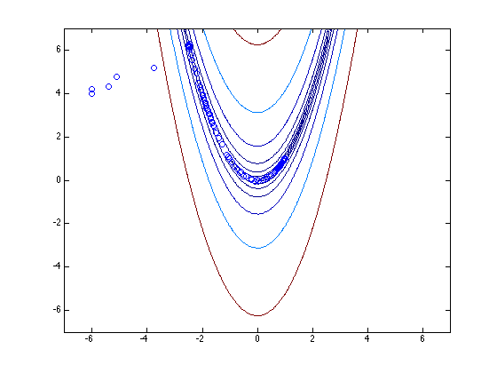 % try the same optimization using fminunc close contour(xc,yc,zc,[.1 1 4 16 64 256 1024 4096]) hold on % now do an optimization using optimplot to plot the points opts = optimset('fminunc'); opts.OutputFcn = @optimplot; opts.Display = 'iter'; optimemory = zeros(0,2); Xfinal = fminunc(rosen,[-6,4],opts); plot(optimemory(:,1),optimemory(:,2),'o') hold off % Note the difference between these two optimizers. Its most obvious % at the start, when fminsearch started out with a relatively large % simplex, which more slowly flopped down to the valley than did % fminunc. Fminsearch also clearly overshoots the valley at first, % then recovers. Also note that when it did hit the bottom of the % valley, fminunc was able to take at least a few large initial steps, % until the valley became too curved and too flat that it also was % forced into short steps too.
First-order
Iteration Func-count f(x) Step-size optimality
0 3 107569 8.07e+04
1 6 45974.3 1.23986e-05 4.39e+04
2 9 11015.9 1 1.64e+04
3 12 2872.55 1 6.78e+03
4 15 545.508 1 2.45e+03
5 18 76.3242 1 767
6 21 13.1998 1 165
7 24 9.78412 1 17.2
8 27 9.74641 1 1.3
9 30 9.74633 1 1.41
10 33 9.74619 1 1.52
11 36 9.74575 1 1.73
12 39 9.74467 1 2.49
13 42 9.74176 1 4.77
14 45 9.7342 1 8.42
15 48 9.71404 1 14.4
16 51 9.65803 1 24
17 63 6.76739 8.23959 30.1
18 66 6.72388 1 33.9
19 72 5.66717 0.618987 36.8
First-order
Iteration Func-count f(x) Step-size optimality
20 75 4.94821 1 3.44
21 81 4.41754 0.466188 24.2
22 84 4.09044 1 23.4
23 87 3.28576 1 3.04
24 93 2.92246 0.328954 16.2
25 96 2.71943 1 8.51
26 99 2.26164 1 7.63
27 105 2.02684 0.637532 9.11
28 108 1.59953 1 4.58
29 111 1.43559 1 10.1
30 114 1.00187 1 2
31 120 0.859627 0.457736 5.31
32 123 0.752733 1 5.48
33 126 0.518895 1 1.8
34 132 0.433292 0.34288 4.64
35 135 0.368255 1 3.2
36 138 0.281549 1 5.63
37 141 0.177695 1 4.1
38 147 0.100968 0.66976 1.83
39 150 0.0904364 1 4.29
First-order
Iteration Func-count f(x) Step-size optimality
40 153 0.0591176 1 2.03
41 156 0.0319392 1 2.46
42 159 0.0145993 1 0.514
43 165 0.00767812 0.468712 1.61
44 168 0.00407101 1 1.23
45 171 0.00108063 1 0.24
46 177 0.000284661 0.5 0.388
47 180 5.52572e-05 1 0.217
48 183 2.34894e-06 1 0.0182
Local minimum found.
Optimization completed because the size of the gradient is less than
the selected value of the function tolerance.
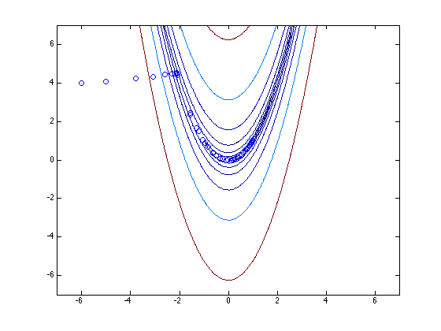 23. Wrapping an optimizer around quad
%{ Nested optimizations or nesting an integration inside an optimization are similar problems. Both really just a problem of managing parameter spaces. I.e., you must ensure that each objective function or integrand sees the appropriate set of parameters. In this example, I'll formulate an optimization which has an integration at its heart. %}
% Choose some simple function to integrate. % % z = (coef(1)^2)*x^2 + (coef(2)^2)*x^4 % % I picked this one since its integral over the % interval [-1 1] is clearly minimized at coef = [0,0]. K = @(x,coef) coef(1).^2*x.^2 + coef(2).^2*x.^4; % As far as the integration is concerned, coef is a constant % vector. It is invariant. And the optimization really does % not want to understand what x is, as far as the optimizer % is concerned, its objective is a function of only the % parameters in coef. % We can integrate K easily enough (for a given set of % coefficients (coef) via coef = [2 3]; quad(K,-1,1,1e-13,[],coef) % We could also have embedded coef directly into the % anonymous function K, as I do below.
ans =
6.2667
% As always, I like to make sure that any objective function % produces results that I'd expect. Here we know what to % expect, but it never hurts to test our knowledge. I'll % change the function K this time to embed coef inside it. % If we try it at [0 0], we see the expected result, i.e., 0. coef = [0 0]; K = @(x) coef(1).^2*x.^2 + coef(2).^2*x.^4; quad(K,-1,1,1e-13)
ans =
0
% I used a tight integration tolerance because we will % put this inside an optimizer, and we want to minimize % any later problems with the gradient estimation. % Now, can we minimize this integral? Thats easy enough. % Here is an objective function, to be used with a % minimizer. As far as the optimizer is concerned, obj is % a function only of coef. obj = @(coef) quad(@(x) coef(1).^2*x.^2+coef(2).^2*x.^4,-1,1,1e-13); % Call fminsearch, or fminunc fminsearch(obj,[2 3],optimset('disp','iter'))
Iteration Func-count min f(x) Procedure
0 1 6.26667
1 3 6.26667 initial simplex
2 5 5.99767 expand
3 7 5.33475 expand
4 9 4.81885 expand
5 11 3.64071 expand
6 12 3.64071 reflect
7 14 3.33985 reflect
8 16 2.3508 expand
9 17 2.3508 reflect
10 19 0.853714 expand
11 20 0.853714 reflect
12 22 0.313741 reflect
13 24 0.251397 reflect
14 26 0.0928385 reflect
15 28 0.060519 contract inside
16 30 0.0323352 contract inside
17 32 0.0106107 contract inside
18 34 0.0106107 contract outside
19 36 0.00612859 contract inside
20 38 0.00203893 contract inside
21 40 0.000622543 contract inside
22 42 0.000622543 contract inside
23 43 0.000622543 reflect
24 45 0.000117795 contract inside
25 47 0.000117795 contract outside
26 49 0.000117795 contract inside
27 51 3.8102e-05 contract outside
28 53 5.70458e-06 contract inside
29 55 5.70458e-06 contract inside
30 56 5.70458e-06 reflect
31 58 5.62239e-06 contract inside
32 60 1.09586e-06 contract inside
33 62 3.15652e-07 contract inside
34 64 3.15652e-07 contract inside
35 66 2.43437e-07 contract inside
36 68 2.43437e-07 contract inside
37 70 1.43495e-08 contract inside
38 71 1.43495e-08 reflect
39 73 1.43495e-08 contract inside
40 75 1.43495e-08 contract outside
41 77 1.43495e-08 contract inside
42 79 6.72372e-09 reflect
43 81 1.12931e-09 contract inside
44 83 1.12931e-09 contract inside
45 85 1.12931e-09 contract inside
Optimization terminated:
the current x satisfies the termination criteria using OPTIONS.TolX of 1.000000e-04
and F(X) satisfies the convergence criteria using OPTIONS.TolFun of 1.000000e-04
ans =
7.0654e-06 -5.2346e-05
% or fminunc(obj,[2 3],optimset('disp','iter','largescale','off')) % Both will return a solution near [0 0].
First-order
Iteration Func-count f(x) Step-size optimality
0 3 6.26667 2.67
1 6 2.43067 0.375 1.68
2 9 0.00982186 1 0.103
3 12 0.000170606 1 0.0175
4 15 1.21843e-08 1 0.000153
5 18 3.47601e-12 1 1.93e-06
Local minimum found.
Optimization completed because the size of the gradient is less than
the default value of the function tolerance.
ans =
-1.3221e-06 -2.4035e-06
24. Graphical tools for understanding sets of nonlinear equations
%{ Pick some simple set of nonlinear equations. Perhaps this pair will do as well as any others. x*y^3 = 2 y-x^2 = 1 We will look for solutions in the first quadrant of the x-y plane, so x>=0 and y>=0. %}
% Now consider each equation independently from the other. In the x-y % plane, these equations can be thought of as implicit functions, thus % ezplot can come to our rescue. close all ezplot('x*y.^3 - 2',[0 5]) hold on ezplot('y - x.^2 - 1',[0 5]) hold off grid on title 'Graphical (ezplot) solution to a nonlinear system of equations' xlabel 'x' ylabel 'y' % The intersection of the two curves is our solution, zooming in % will find it quite nicely.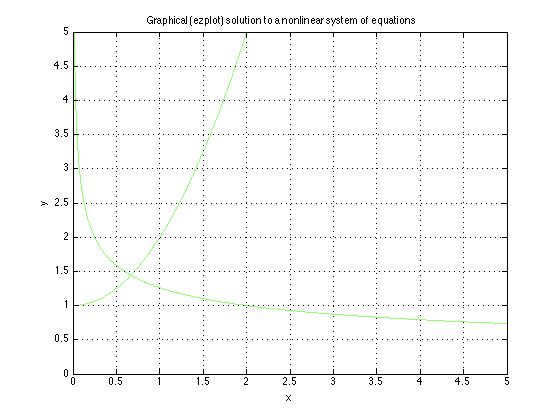
% An alternative approach is to think of the problem in terms of % level sets. Given a function of several variables, z(x,y), a % level set of that function is the set of (x,y) pairs such that % z is constant at a given level. % In Matlab, there is a nice tool for viewing level sets: contour. % See how it allows us to solve our system of equations graphically. % Form a lattice over the region of interest in the x-y plane [x,y] = meshgrid(0:.1:5); % Build our functions on that lattice. Be careful to use .*, .^ and % ./ as appropriate. z1 = x.*y.^3; z2 = y - x.^2; % Display the level sets contour(x,y,z1,[2 2],'r') hold on contour(x,y,z2,[1 1],'g') hold off grid on title 'Graphical (contour) solution to a nonlinear system of equations' xlabel 'x' ylabel 'y'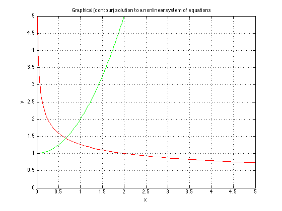
25. Optimizing non-smooth or noisy functions
%{ A property of the tools in the optimization toolbox is they all assume that their objective function is a continuous, differentiable function of its parameters. (With the exception of bintprog.) If your function does not have this property, then look elsewhere for optimization. One place might be the Genetic Algorithms and Direct Search toolbox. http://www.mathworks.com/products/gads/description4.html Simulated annealing is another tool for these problems. You will find a few options on the file exchange. %}
26. Stochastic optimizers
%{ Many tools in mathematics arise from analogies to real world solutions to problems. Splines for example, are a nice way to fit smooth curves to data. But splines are just a mathematical model of a thin flexible beam. Likewise, optimization tools can sometimes arise as mathematical analogies to real world processes. There are many such schemes for optimization, using % various optimization metaphors. - Genetic algorithms - Particle swarms - Simulated annealing Genetic algorithms model an optimization process by encoding your objective function in a form that Mother Nature might "understand". Traveling salesman problems are good examples of a class of problem that are well solved by stochastic optimizers. Here is a nice example: http://www.mathworks.com/matlabcentral/fileexchange/loadFile.do?objectId=13680&objectType=FILE Particle swarms are another nice tool. They model an optimization process as a flock of birds or swarm of insects might do. A swarm of "birds" flies around in the n-dimensional space of your objective function. By always heading stochastically towards the optimum, they can converge on a solution. A nice thing is, since the cluster is more than a single point, they may be able to "see" around small hills and valleys, flowing to a global solution. A very flexible tool for particle swarm optimization on the file exchange is found here: http://www.mathworks.com/matlabcentral/fileexchange/loadFile.do?objectId=7506&objectType=file Finally, simulated annealing is a tool that models an optimization as an annealing problem in metallurgy. A molten or near molten metal is in a very unordered physical state. Its atoms will bounce around easily, with only moderate influence from their neighbors. Rather than supply a serious annealing tool myself, I'll suggest that you look on the file exchange. Here is one tool that might prove interesting: http://www.mathworks.com/matlabcentral/fileexchange/loadFile.do?objectId=10548&objectType=file Were we to rapidly quench such a piece of metal in water as would a blacksmith do, we essentially freeze the system in that unordered state. Some atoms will be very near each other, whereas others will be widely spaced apart. The resulting amorphous "glass" will tend to be very brittle, breaking easily under stress since there are many weak points in the resulting solid. The annealing process takes our metallic object, and slowly cools it down following an annealing schedule, forming a well ordered crystalline lattice in the process. This lattice is at a much lower potential energy state than the amorphous glass I described before. Each individual atom in the crstalline lattice lies at a consistent distance from its neighbors. Longer annealing schedules tend to be better than shorter ones, giving the lattice more time to heal any defects. Of course, all of this is stochastic in nature as the atoms bounce randomly into their lowest potential energy locations in the lattice. (I hope I've described annealing adequately.) This annealing metaphor is a nice one for stochastic optimization, especially problems that may have multiple local optima. The use of "simulated annealing" to minimize a general function in mathematics is quite simple really. The general idea is to start at your initial value, then randomly perturb it. If the function value at your perturbed location is better (lower) than the previous value, then accept it and move on to the next iteration. If the function value is worse, then you might accept it too, with a probability that is based on the current temperature of the system. Thus at a high temperature state, you will be more likely to accept an increase in function value. More sophisticated codes might even choose to adjust the perturbation variance as a function of system temperature. Thus at early states of the system with high temperature, large steps can be taken. Note, there are many subtle variations on these stochastic optimization schemes. In my experience, simulated annealing tools seem to work best when - you have many variables to optimize over, - are willing to accept a good, but probably not globally optimal solution. %}
% Find the point x that minimizes a function wih multiple local % minima. f = @(x) real(besselj(2,x)); ezplot(f,[-50,50])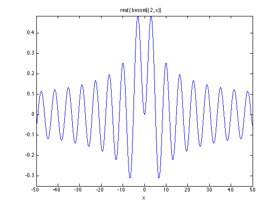
% Define an annealing schedule as a function of time, where time % is proportional to iteration count. The annealing schedule is % just a function that describes how the "temperature" of our % process will be lowered with "time". Thus it may be a function % of iteration number, as k = 1e-2; sched1 = @(iter) exp(-k*iter); % or we could choose to define the new temperature at time t+1 % as a function of the old temperature... k = 0.9905; sched2 = @(Temp) k*Temp; % Either choice allows us to define a rate of temperature decrease % I'll let an interested reader decide how the two are related. % Choose a starting value for the minimization problem. I've % intentionally chosen a point in a poor place relative to the % global solution. X = 0; % Loop for MaxIter number of steps, remembering all the steps we % have taken along the way, and plot the results later. MaxIter = 10000; X_T = zeros(MaxIter,2); fold = f(X); X_T(1,:) = [X,fold]; std0 = 3; for iter = 2:MaxIter % current temperature (using the exponential form) T = sched1(iter); % Temperature dependent perturbation Xpert = std0*randn(1)*sqrt(T); Xnew = X + Xpert; fnew = f(Xnew); % Do we accept it? Always move to the new location if it % results in an improvement in the objective function. if fnew < fold % automatically accepted step X = Xnew; fold = fnew; X_T(iter,:) = [X,fnew]; elseif rand(1) <= (T^2) % Also accept the step with probability based on the % temperature of the system at the current time. This % helps us to tunnel out of local minima. X = Xnew; fold = fnew; acceptflag = false; X_T(iter,:) = [X,fnew]; else X_T(iter,:) = [X,fold]; end % if we dropped through the last two tests, then we will % go on to the next iteration. end [fmin,minind] = min(X_T(:,2)); % all is done, so plot the results x1 = min(-50,min(X(:,1))); x2 = max(50,max(X(:,1))); ezplot(f,[x1,x2]) hold on plot(X_T(:,1),X_T(:,2),'r-') plot(X_T(minind,1),fmin,'go') hold off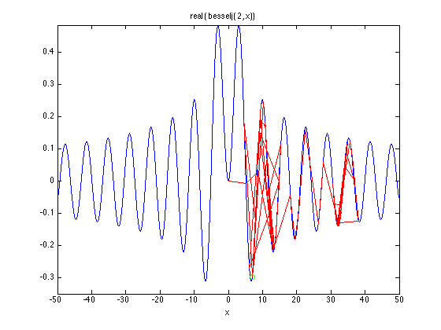
% I've also found that it works well if I retain the best few local % solutions in the search. One client of mine had a problem which was % best solved by a stochastic optimizer, but they also had secondary, % not easily quantifiable objectives. So I would report the best few % clearly distinct solutions found in the search. They could now choose % the solution which they felt to be best overall.
27. Linear equality constraints
%{ This section is designed to help the reader understand how one solves linear least squares problems subject to linear equality constraints. Its written for the reader who wants to understand how to solve this problem in terms of liner algebra. (Some may ask where do these problems arise: i.e., linear least squares with many variables and possibly many linear constraints. Spline models are a common example, functions of one or several dimensions. Under some circumstances there may also be linear inequality constraints.) If you wish to use code for these problems, then LSQLIN from the optimization toolbox is a good option. You will also find lsequal on the file exchange. My own LSE tool is also now found on the file exchange. I put it up because it offers a variety of improvements over the existing tools. LSE allows the user to supply multiple right hand sides to the problem, it allows weights, and most interestingly, it can handle singular systems (as well as singular constraints) using a pinv-like solution. http://www.mathworks.com/matlabcentral/fileexchange/loadFile.do?objectId=13835&objectType=FILE I'll show how to solve the general constrained problem using a QR factorization here. We'll start off with a simple example. Assume a model of y = a + b*x1 + c*x2 with the simple equality constraint c - b = 1 How would we solve this problem on paper? (Yes, lsqlin solves these problems in its sleep. We'll do it the hard way instead.) Simplest is to eliminate one of the unknowns using the constraint. Replace c with 1+b in the model. c = 1 + b So y = a + b*x1 + (1+b)*x2 Rearrange terms to get this (y - x2) = a + b*(x1+x2) Estimate the unknowns (a,b), then recover c once b is known. A point to note is I suggested we eliminate C in the model. As easily, we could have eliminated b, but we could not have ch0osen to eliminate a, because a did not enter into our constraint at all. Another thing to think about is if the constraint had some coefficients with values very near zero. Elinimation of those variables would then cause significant instabilities in the computations. Its similar to the reason why pivoting is useful in the solution of systems of equations. Lets try it on some data: %}
n = 500; x1 = rand(n,1); x2 = rand(n,1); % yes, I know that these coefficients do not actually satisfy the % constraint above. They are close though. y = 1 + 2*x1 + pi*x2 + randn(n,1)/5; % solve the reduced problem above ab = [ones(n,1), x1+x2]\(y - x2) % recover c c = 1 + ab(2) % Note that the coefficients were originally (1,2,pi) but % application of the constraint c - b = 1
ab =
0.97972
2.0924
c =
3.0924
% Had we never applied any constraint, the (1,2,pi) values will be % closer than for the constrained solution. This is easy to verify. [ones(n,1),x1,x2]\y
ans =
0.97785
2.0245
3.1615
% We may use lsqlin to verify our constrained solution lsqlin([ones(n,1),x1,x2],y,[],[],[0 -1 1],1,[],[],[],optimset('largescale','off')) % As expected, the two constrained solutions agree.
Optimization terminated.
ans =
0.97972
2.0924
3.0924
% The real question in this section is not how to solve a linearly % constrained problem, but how to solve it programmatically, and % how to solve it for possibly multiple constraints. % Start with a completely random least squares problem. n = 20; % number of data points p = 7; % number of parameters to estimate A = rand(n,p); % Even generate random coefficients for our ground truth. coef0 = 1 + randn(p,1) y = A*coef0 + randn(n,1); % Finally, choose some totally random constraints m = 3; % The number of constraints in the model C = randn(m,p); D = C*coef0;
coef0 =
-1.3057
0.40132
0.20907
0.89318
1.1278
0.0051687
-0.22604
% Again, compute the simple (unconstrained) linear regression % estimates for this model coef1 = A\y % verify that the unconstrained model fails to satisfy the % constraints, but that the original (ground truth) coefficients % do satisfy them. D-C*coef should be zero. [D-C*coef0,D-C*coef1]
coef1 =
-0.66894
0.20557
1.0555
0.29939
0.63439
-1.3577
-0.29988
ans =
0 0.57661
0 -3.6227
0 2.284
% How does one solve the constrained problem? There are at least % two ways to do so (if we choose not to resort to lsqlin.) For % those devotees of pinv and the singular value distribution, % one such approach would involve a splitting of the solution to % A*x = y into two components: x = x_u + x_c. Here x_c must lie % in the row space of the matrix C, while x_u lies in its null % space. The only flaw with this approach is it will fail for % sparse constraint matrices, since it would rely on the singular % value decomposition. % % I'll discuss an approach that is based on the qr factorization % of our constraint matrix C. It is also nicely numerically stable, % and it offers the potential for use on large sparse constraint % matrices. [Q,R,E]= qr(C,0) % First, we will ignore the case where C is rank deficient (high % quality numerical code would not ignore that case, and the QR % allows us to identify and deal with that event. It is merely a % distraction in this discussion however.) % % We transform the constraint system C*x = D by left multiplying % by the inverse of Q, i.e., its transpose. Thus, with the pivoting % applied to x, the constraints become % % R*x(E) = Q'*D % % In effect, we wanted to compute the Q-less QR factorization, % with pivoting. % % Why did we need pivoting? As I suggested above, numerical % instabilities may result otherwise. % % We will reduce the constraints further by splitting it into % two fragments. Assuming that C had fewer rows than columns, % then R can be broken into two pieces: % % R = [R_c, R_u] R_c = R(:,1:m); R_u = R(:,(m+1):end); % Here R_c is an mxm, upper triangular matrix, with non-zero % diagonals. The non-zero diagonals are ensured by the use of % pivoting. In effect, column pivoting provides the means by % which we choose those variables to eliminate from the regression % model. % % The pivoting operation has effectively split x into two pieces % x_c and x_u. The variables x_c will correspond to the first m % pivots identified in the vector E. % % This split can be mirrored by breaking the matrices into pieces % % R_c*x_c + R_u*X_u = Q'*D % % We will use this version of our constraint system to eliminate % the variables x_c from the least squares problem. Break A into % pieces also, mirroring the qr pivoting: A_c = A(:,E(1:m)); A_u = A(:,E((m+1):end));
Q =
-0.048893 0.57261 0.81837
-0.42077 -0.7549 0.50307
0.90585 -0.31975 0.27785
R =
2.942 -0.45946 0.31854 0.11751 -0.15102 1.1295 0.1324
0 1.7688 0.78974 0.9929 -0.70092 -0.69185 -0.33377
0 0 -0.53478 -0.14492 0.028117 0.50554 -0.2759
E =
6 2 5 4 3 1 7
% So the least squares problem, split in terms of the variable % as we have reordered them is: % % A_c*x_c + A_u*x_u = y % % We can now eliminate the appropriate variables from the linear % least squares. % % A_c*inv(R_c)*(Q'*D - R_u*x_u) + A_u*x_u = y % % Expand and combine terms. Remember, we will not use inv() % in the actual code, but instead use \. The \ operator, when % applied to an upper triangular matrix, is very efficient % compared to inv(). % % (A_u - A_c*R_c\R_u) * x_u = y - A-c*R_c\(Q'*D) x_u = (A_u - A_c*(R_c\R_u)) \ (y - A_c*(R_c\(Q'*D)))
x_u =
1.4483
-0.078187
-1.5781
-0.42198
% Finally, we recover x_c from the constraint equations
x_c = R_c\(Q'*D - R_u*x_u)
x_c =
0.050117
-0.023883
0.80583
% And we put it all together in the unpivoted solution vector x:
xfinal = zeros(p,1);
xfinal(E(1:m)) = x_c;
xfinal(E((m+1):end)) = x_u
xfinal =
-1.5781
-0.023883
-0.078187
1.4483
0.80583
0.050117
-0.42198
% Were we successful? How does this result compare to lsqlin? % The two are identical (as usual, only to within floating % point precision irregularities.) lsqlin(A,y,[],[],C,D,[],[],[],optimset('largescale','off'))
Optimization terminated.
ans =
-1.5781
-0.023883
-0.078187
1.4483
0.80583
0.050117
-0.42198
% Verify that the equality constraints are satisfied to within % floating point tolerances. C*xfinal - D
ans =
3.3307e-16
0
0
28. Sums of squares surfaces and the geometry of a regression
%{ I'll admit in advance that this section has no tips or tricks to look for. But it does have some pretty pictures, and I hope it leads into the next two sections, where I talk about confidence limits and error estimates for parameters. Consider the very simple (linear) regression model: y = a0 + a1*x + error. The sum of squares surface as a function of the parameters (a0,a1) will have ellipsoidal contours. Theory tells us this, but its always nice to back up theory with an example. Then I'll look at what happens in a nonlinear regression. %}
% A simple linear model n = 20; x = randn(n,1); y = 1 + x + randn(n,1); close figure plot(x,y,'o') title 'Linear data with noise' xlabel 'x' ylabel 'y'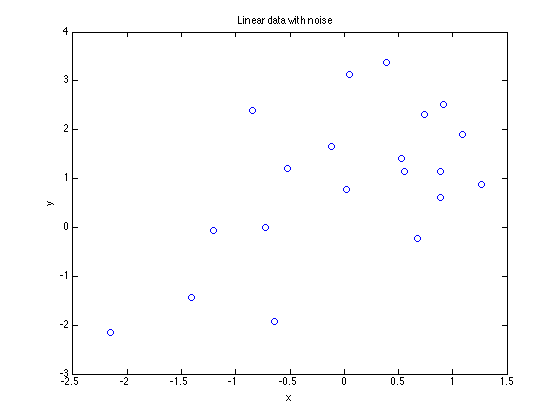
% linear regression estimates M = [ones(n,1),x]; a0a1 = M\y % look at various possible values for a0 & a1 v = -1:.1:3; nv = length(v); [a0,a1] = meshgrid(v); a0=a0(:)'; a1=a1(:)'; m = length(a0); SS = sum(((ones(n,1)*a0 + x*a1) - repmat(y,1,m)).^2,1); SS = reshape(SS,nv,nv); surf(v,v,SS) title 'Sum of squares error surface' xlabel 'a0' ylabel 'a1' figure contour(v,v,SS) hold on plot(a0a1(1),a0a1(2),'rx') plot([[-1;3],[1;1]],[[1;1],[-1;3]],'g-') hold off title 'Linear model: Sum of squares (elliptical) error contours' xlabel 'a0' ylabel 'a1' axis equal axis square grid on % Note: the min SSE will occur roughly at (1,1), as indicated % by the green crossed lines. The linear regression estimates % are marked by the 'x'. % As predicted, the contours are elliptical.
a0a1 =
0.91483
0.95507
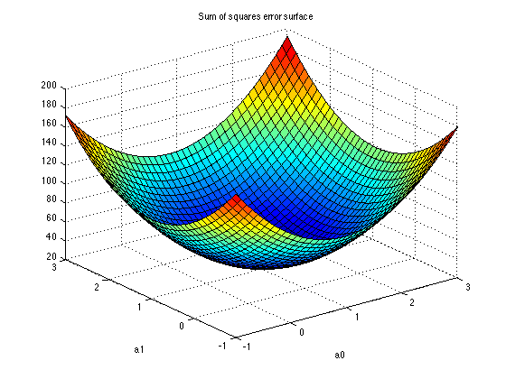 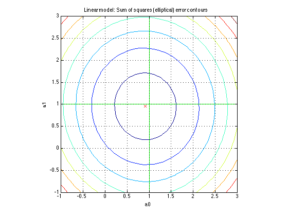 % next, we will do the same analysis for a nonlinear model % with two parameters: % % y = a0*exp(a1*x.^2) + error % % First, we will look at the error surface % A simple nonlinear model n = 20; x = linspace(-1.5,1.5,n)'; y = 1*exp(1*x.^2) + randn(n,1); figure plot(x,y,'o') title 'Nonlinear data with noise' xlabel 'x' ylabel 'y'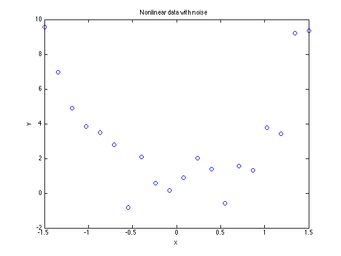
% Nonlinear regression estimates. Use pleas for this one.
a1_start = 2;
[a1,a0] = pleas({@(a1,xdata) exp(a1*xdata.^2)},a1_start,x,y)
a0a1 = [a0,a1];
Local minimum possible.
lsqnonlin stopped because the final change in the sum of squares relative to
its initial value is less than the selected value of the function tolerance.
a1 =
1.4095
a0 =
0.48696
% look at various possible values for a0 & a1 v = .5:.01:1.5; nv = length(v); [a0,a1] = meshgrid(v); a0=a0(:)'; a1=a1(:)'; m = length(a0); SS = sum((((ones(n,1)*a0).*exp(x.^2*a1)) - repmat(y,1,m)).^2,1); SS = reshape(SS,nv,nv); minSS = min(SS(:)); surf(v,v,SS) title 'Nonlinear model: Sum of squares error surface' xlabel 'a0' ylabel 'a1' figure contour(v,v,SS,minSS + (0:.25:2)) hold on plot(a0a1(1),a0a1(2),'rx') plot([[-1;3],[1;1]],[[1;1],[-1;3]],'g-') hold off title 'Nonlinear model: Sum of squares error contours' xlabel 'a0' ylabel 'a1' axis equal axis square grid on % Note: This time, the sums of squares surface is not as % neatly elliptical.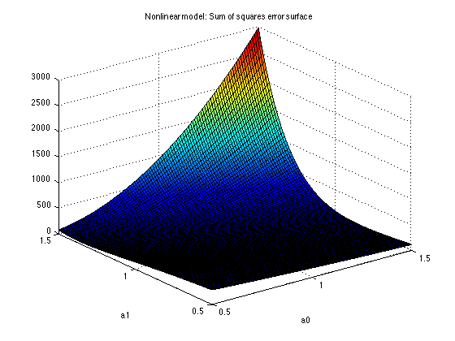 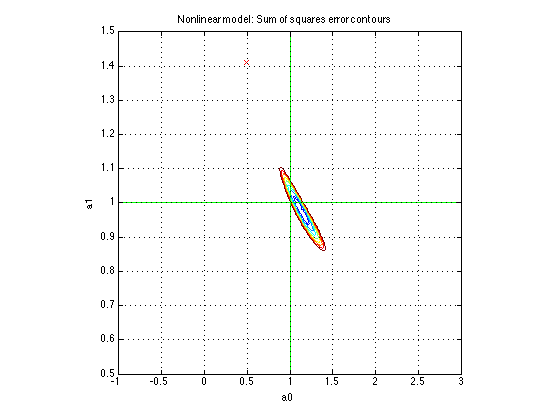
29. Confidence limits on a regression model
%{ There are various things that people think of when the phrase "confidence limits" arises. - We can ask for confidence limits on the regression parameters themselves. This is useful to decide if a model term is statistically significant, if not, we may choose to drop it from a model. - We can ask for confidence limits on the model predictions (yhat) These goals are related of course. They are obtained from the parameter covariance matrix from the regression. (The reference to look at here is again Draper and Smith.) If our regression problem is to solve for x, such that A*x = y, then we can compute the covariance matrix of the parameter vector x by the simple V_x = inv(A'*A)*s2 where s2 is the error variance. Typically the error variance is unknown, so we would use a measure of it from the residuals. s2 = sum((y-yhat).^2)/(n-p); Here n is the number of data points, and p the number of parameters to be estimated. This presumes little or no lack of fit in the model. Of course, significant lack of fit would invalidate any confidence limits of this form. Often only the diagonal of the covariance matrix is used. This provides simple variance estimates for each parameter, assuming independence between the parameters. Large (in absolute value) off-diagonal terms in the covariance matrix will indicate highly correlated parameters. In the event that only the diagonal of the covariance matrix is required, we can compute it without an explicit inverse of A'*A, and in way that is both computationally efficient and as well conditioned as possible. Thus if one solves for the solution to A*x=y using a qr factorization as x = R\(Q*y) then recognize that inv(A'*A) = inv(R'*R) = inv(R)*inv(R') = inv(R)*inv(R)' If we have already computed R, this will be more stable numerically. If A is sparse, the savings will be more dramatic. There is one more step to take however. Since we really want only the diagonal of this matrix, we can get it as: diag(inv(A'*A)) = sum(inv(R).^2,2) %}
% Compare the two approaches on a random matrix. A=rand(10,3); diag(inv(A'*A)) [Q,R]=qr(A,0); sum(inv(R).^2,2) % Note that both gave the same result.
ans =
1.2
0.7468
1.1425
ans =
1.2
0.7468
1.1425
% As a test, run 1000 regressions on random data, compare how % many sets of 95% confidence intervals actually contained the % true slope coefficient. m = 1000; % # of runs to verify confidence intervals n = 100; % # of data points % ci will contain the upper and lower limits on the slope % parameter in columns 1 and 2 respectively. ci = zeros(m,2); p = 2; for i=1:m x = randn(n,1); y = 1+2*x + randn(n,1); % solve using \ M = [ones(n,1),x]; coef = M\y; % the residual vector res = M*coef - y; % yes, I'll even be lazy and use inv. M is well conditioned % so there is no fear of numerical problems, and there are % only 2 coefficients to estimate so there is no time issue. s2 = sum(res.^2)/(n-p); sigma = s2*diag(inv(M'*M))'; % a quick excursion into the statistics toolbox to get % the critical value from tinv for 95% limits: % tinv(.975,100) % ans = % 1.9840 ci(i,:) = coef(2) + 1.984*sqrt(sigma(2))*[-1 1]; end % finally, how many of these slope confidence intervals % actually contained the true value (2). In a simulation % with 1000 events, we expect to see roughly 950 cases where % the bounds contained 2. sum((2>=ci(:,1)) & (2<=ci(:,2))) % 950 may not have been too bad a prediction after all.
ans = 962
% Given a complete covariance matrix estimate, we can also compute % uncertainties around any linear combination of the parameters. % Since a linear regression model is linear in the parameters, % confidence limits on the predictions of the model at some point % or set of points are easily enough obtained, since the prediction % at any point is merely a linear combination of the parameters. % An example of confidence limits around the curve on a linear % regression is simple enough to do. n = 10; x = sort(rand(n,1))*2-1; y = 1 + 2*x + 3*x.^2 + randn(n,1); M = [ones(n,1),x,x.^2]; coef = M\y; % Covariance matrix of the parameters yhat = M*coef; s2 = sum((y - yhat).^2)/(n-3); sigma = s2*inv(M'*M) % Predictions at a set of equally spaced points in [0,1]. x0 = linspace(-1,1,101)'; M0 = [ones(101,1),x0,x0.^2]; y0 = M0*coef; V = diag(M0*sigma*M0'); % Use a (2-sided) t-statistic for the intervals at a 95% level % tinv(.975,100) % ans = % 1.9840 tcrit = 1.9840; close all plot(x,y,'ro') hold on plot(x0,y0,'b-') plot(x0,[y0-tcrit*V,y0+tcrit*V],'g-') hold off
sigma =
0.25823 -0.046735 -0.4669
-0.046735 3.8669 -5.0048
-0.4669 -5.0048 8.7414
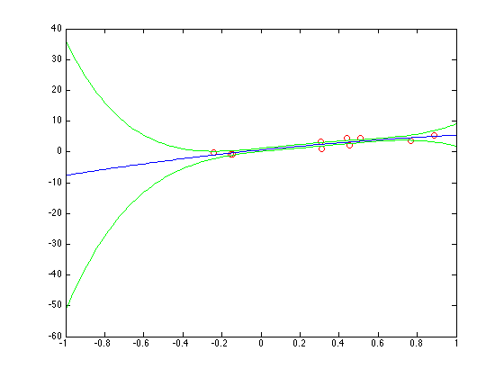 % Equality constraints are easily dealt with, since they can be % removed from the problem (see section 25.) However, active % inequality constraints are a problem! For a confidence limit, % one cannot assume that an active inequality constraint was truly % an equality constraint, since it is permissible to fall any tiny % amount inside the constraint. % % If you have this problem, you may wish to consider the jackknife % or bootstrap procedures.
30. Confidence limits on the parameters in a nonlinear regression
%{ A nonlinear regression is not too different from a linear one. Yes, it is nonlinear. The (approximate) covariance matrix of the parameters is normally derived from a first order Taylor series. Thus, of J is the (nxp) Jacobian matrix at the optimum, where n is the number of data points, and p the number of parameters to estimate, the covariance matrix is just S = s2*inv(J'*J) where s2 is the error variance. See section 27 for a description of how one may avoid some of the problem with inv and forming J'*J, especially if you only wish to compute the diagonals of this matrix. What you do not want to use here is the approximate Hessian matrix returned by an optimizer. These matrices tend to be formed from updates. As such, they are often only approximations to the true Hessian at the optimum, at the very least lagging behind a few iterations. Since they are also built from rank 1 updates to the Hessian, they may lack the proper behavior in some dimensions. (For example, a lucky starting value may allow an optimization to converge in only one iteration. This would also update the returned Hessian approximation in only 1 dimension, so probably a terrible estimate of the true Hessian at that point.) %}
31. Quadprog example, unrounding a curve
%{ A nice, I'll even claim elegant, example of the use of quadprog is the problem of unrounding a vector. Code for this in the form of a function can be found on the file exchange as unround.m http://www.mathworks.com/matlabcentral/fileexchange/loadFile.do?objectId=8719&objectType=FILE Consider a vector composed of some smooth function evaluated at consecutive (equally spaced) values of its independent variable. Then the function values are rounded to the nearest integer. Can we recover the original smooth function values? Clearly we cannot do so exactly for an arbitrary function, but we can attempt to find the smoothest set of function values that are consistent with the given rounded set. We will treat each element of the set as an unknown, so a vector of length n will have n unknowns to solve for. %}
% A simple function of x n=101; x = linspace(0,1,n); v0 = (10*x.^2); % rounded vector vr = round(v0); close plot(x,v0,'r-',x,vr,'bo') title 'Base functional form, with rounding' xlabel 'x' ylabel 'y'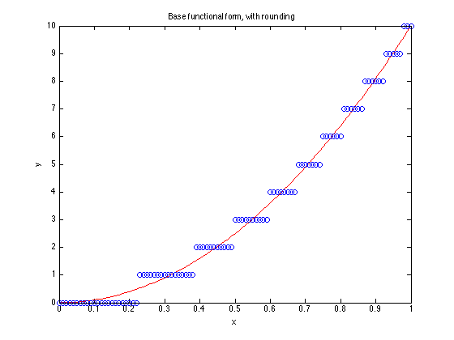
% bound constraints. since vr is composed of all integers, then % the origin, unrounded values must lie within simple bounds % from our rounded set. LB = vr - 0.5; UB = vr + 0.5; % sparse system representing smoothness. Consider any row of S. % When multiplied by the vector of unknowns, it computes a % second order finite difference of the vector around some point. % This, by itself cannot be used in quadprog, because S is not % an appropriate quadratic form. S = spdiags(repmat([1 -2 1],n-2,1),[0 1 2],n-2,n); % H is positive semi-definite. Quadprog will be happy. H = S'*S; f = zeros(n,1); % Solve the quadratic programming problem. Make sure we use the % largescale solver. Note that we have carefully constructed % H to be sparse. The largescale solver will allow simple bound % constraints. As important as the constraints, when LargeScale % is 'on', quadprog can handle quite large problems, numbering % into many thousands of variables. Note that I have supplied H % as a sparse matrix. It is tightly banded. options = optimset('quadprog'); options.LargeScale = 'on'; options.Display = 'final'; vur = quadprog(H,f,[],[],[],[],LB,UB,[],options); plot(x,v0,'r-',x,vr,'bo',x,vur,'k--') legend('Base curve','Rounded data','Un-rounded curve','Location','NorthWest') xlabel 'x' ylabel 'y' % Clearly the two curves overlay quite nicely, only at the ends % do they deviate from each other significantly. That deviation % is related to the behavior of a natural spline, despite the % fact that we never explicitly defined a spline model. In effect, % we minimized the approximate integral of the square of the second % derivative of our function. It is this integral from which cubic % splines are derived.
Optimization terminated: relative function value changing by less than sqrt(OPTIONS.TolFun), no negative curvature detected in current trust region model and the rate of progress (change in f(x)) is slow.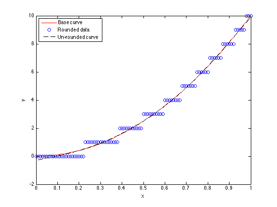
32. R^2
%{ R^2 is a measure of the goodness of fit of a regression model. What does it mean? We can write R^2 in terms of the vectors y (our data) and yhat (our model predictions) as R^2 = 1 - ( norm(yhat-y) / norm(y-mean(y)) )^2 Intuitively, we might describe the term "norm(y-mean(y))" as the total information content of our data. Likewise, the term "norm(yhat-y)" is the amount of signal that remains after removing the predictions of our model. So when the model describes the data perfectly, this ratio will be zero. Squared and subtracted from 1, a perfect fit will yield an R^2 == 1. At the other end of the spectrum, a fit that describes the data no better than does the mean will yield a zero value for R^2. It also suggests that a model with no mean term can produce a negative value for R^2. The implication in the event of a negative R^2 is the model is a poorer predictor of the data than would be a simple mean. Finally, note that the formula above is not specific to a linear regression model. R^2 may apply as well to a nonlinear regression model. When do we use R^2? In the words of Draper & Smith, R^2 is the first thing they might look at when perusing the output of a regression analysis. It is also clearly not the only thing they look at. My point is that R^2 is only one measure of a model. There is no critical value of R^2 such that a model is acceptable. The following pair of examples may help to illustrate this point. %}
% This curve fit will yield an R^2 of roughly 0.975 from my tests. % Is it a poor model? It depends upon how much you need to fit the % subtle curvature in that data. n=25; x = sort(rand(n,1)); y = exp(x/2)+randn(size(x))/30; M = [ones(n,1),x]; coef = M\y; yhat = M*coef; Rsqr = 1 - (norm(yhat-y)/norm(y-mean(y))).^2 close plot(x,y,'bo',x,yhat,'r-') title 'R^2 is approximately 0.975' xlabel x ylabel y % Was the linear model chosen adequate? It depends on your data and % your needs. My personal opinion of the data in this example is % that if I really needed to know the amount of curvature in this % functional relationship, then I needed better data or much more % data.
Rsqr =
0.95546
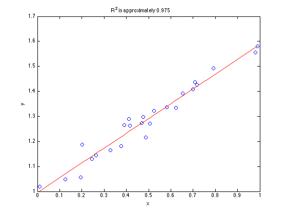 % How about this data? It yields roughly the same value of R^2 as did % the data with a linear model above. n = 25; x = linspace(0,1,n)'; y = x + ((x-.5).^2)*0.6; M = [ones(n,1),x]; coef = M\y; yhat = M*coef; Rsqr = 1 - (norm(yhat-y)/norm(y-mean(y))).^2 plot(x,y,'bo',x,yhat,'r-') title 'R^2 is approximately 0.975' xlabel x ylabel y % Is there any doubt that there is lack of fit in this model? You % may decide that a linear model is not adequate here. That is a % decision that you must make based on your goals for a model.
Rsqr =
0.97478
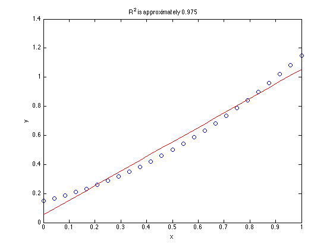 %{ To sum up, the intrepid modeler should look at various statistics about their model, not just R^2. They should look at plots of the model, plots of residuals in various forms. They should consider if lack of fit is present. They should filter all of this information based on their needs and goals for the final model and their knowledge of the system being modeled. %}
33. Estimation of the parameters of an implicit function
%{ How can we estimate the parameters for implicit functions, one simple example might be: y = a*(y - b*x)^2 The simplistic approach is to formulate this as a direct least squares problem for lsqnonlin. y - a*(y - b*x)^2 = 0 Choose values of a and b that drive this expresion towards zero for each data point (x,y). What could be wrong? The problem is the presumption is of additive (normal) error on y. The value of y that is used inside the parens is the "measured" value. Its the true value, plus any error and lack of fit. We will find that if we do try to use lsqnonlin in the way described, we should expect poor results - possibly non-convergence, especially is there are large residuals or your starting values are poor. %}
% Lets start by building ourselves an implicit function that we % can deal with easily. % % y = (y-2*x)^2 % build it from specified values of y n = 20; y = 0.5+5*rand(1,n); % I chose this functional form since I could still find points % on the curve itself easily. x = (y - sqrt(y))/2; % sort it on x for plotting purposes [x,tags]=sort(x); y=y(tags); % Now, lets add some error into the mix. Not too large of % an error. err = randn(1,n)/10; % Added to y ye = y + err; % plot the data close plot(x,y,'-',x,ye,'o')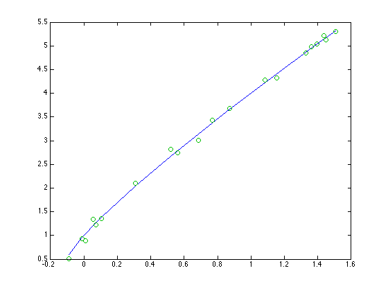
% We need to solve for the model now. In this case I'll % presume the model to be % % y = a*(y - b*x)^2 % % We wish to estimate a and b. Of course, the true values % are [1, 2] for a and b respectively. % First of all, can we just throw lsqnonlin at this implicit % function as described above? fun = @(ab) ye-ab(1)*(ye-ab(2)*x).^2; options = optimset('lsqnonlin'); options.Display = 'iter'; abstart = [1.5 1.5]; lsqnonlin(fun,abstart,[],[],options) % Recall that the true values of a and b were [1,2], so it % did work, although not terribly well. Can we do better?
Norm of First-order
Iteration Func-count f(x) step optimality CG-iterations
0 3 543.314 807
1 6 13.3651 0.615815 72.2 0
2 9 0.550934 0.204101 2.47 0
3 12 0.530559 0.0150544 0.00993 0
4 15 0.530559 0.000101079 2.72e-06 0
Local minimum possible.
lsqnonlin stopped because the final change in the sum of squares relative to
its initial value is less than the selected value of the function tolerance.
ans =
0.96023 1.9674
% Our data as we know it to be is (x,ye). A good test before % we really start is to see if we can predict the error in y, % given values of a and b. From my random data, here is the % first point. [x(1),y(1),err(1),ye(1)] % First, lets see if we can solve for err(1), given the true % values of a and b. a = 1; b = 2; fun = @(e1) (ye(1)-e1 - a*((ye(1)-e1) - b*x(1)).^2) estart = .1; e = fzero(fun,estart)
ans =
-0.089055 0.59001 -0.089782 0.50023
fun =
@(e1)(ye(1)-e1-a*((ye(1)-e1)-b*x(1)).^2)
e =
-0.089782
% This worked nicely. We were able to find the first additive % error to y, given the true values of the parameters. % % Had we chosen different nominal values for a and b, e would have % been different. I'll try it. a = 1.5; b = 1.5; fun = @(e1) (ye(1)-e1 - a*((ye(1)-e1) - b*x(1)).^2) estart = .1; e = fzero(fun,estart)
fun =
@(e1)(ye(1)-e1-a*((ye(1)-e1)-b*x(1)).^2)
e =
0.15197
% We are now ready to put this all into the domain of lsqnonlin. % I won't be able to do this with an anonymous function directly. % I've supplied the function below: % ======================================================== % function epred = implicit_obj(ab,x,ye) % a = ab(1); % b = ab(2); % n = length(ye); % epred = zeros(1,n); % estart = .1; % for i = 1:n % fun = @(ei) (ye(i)-ei - a*((ye(i)-ei) - b*x(i)).^2); % epred(i) = fzero(fun,estart); % end % ======================================================== % Having gone this far, I ALWAYS like to evaluate the objective function % that lsqnonlin will see, especially when its something complicated. % Does it make sense? Try it for a couple of parameter sets. epred=implicit_obj([1.5 1.5],x,ye) epred=implicit_obj([3 1],x,ye)
epred =
Columns 1 through 12
0.15197 0.29003 0.19988 0.51021 0.34993 0.3945 0.66353 0.9043 0.75118 0.75769 1.0028 1.0398
Columns 13 through 20
1.235 1.1254 1.3222 1.3915 1.3842 1.4858 1.3733 1.4328
Exiting fzero: aborting search for an interval containing a sign change
because NaN or Inf function value encountered during search.
(Function value at -9.70829e+153 is -Inf.)
Check function or try again with a different starting value.
epred =
Columns 1 through 12
NaN 0.61276 0.54265 0.89829 0.75336 0.82783 1.27 1.6763 1.5538 1.6519 1.9601 2.0701
Columns 13 through 20
2.4116 2.3522 2.6664 2.7591 2.7741 2.9026 2.7973 2.8975
% Time to call lsqnonlin now. I'll pass in the vectors x and ye % via an anonymous call, although there are many ways to do it. % As always, I use 'iter' for the Display parameter to lsqnonlin, % at least the first time I call it. options = optimset('lsqnonlin'); options.Display = 'iter'; ab_start = [1.5 1.5]; ab_est = lsqnonlin(@(ab) implicit_obj(ab,x,ye),ab_start,[],[],options) % These parameter estimates are clearly much better than our % earlier attempt was able to achieve.
Norm of First-order
Iteration Func-count f(x) step optimality CG-iterations
0 3 19.7073 23.2
1 6 2.23345 0.866246 11.1 0
2 9 0.161109 0.166974 1.31 0
3 12 0.110375 0.0466333 0.0577 0
4 15 0.110258 0.0023696 0.000198 0
5 18 0.110258 2.2356e-05 6.4e-07 0
Local minimum found.
Optimization completed because the size of the gradient is less than
the selected value of the function tolerance.
ab_est =
1.0278 2.0274
34. Robust fitting schemes
%{ Certainly a very good tool for robust fitting is robustfit from the statistics toolbox. I'll try only to give an idea of how such a scheme works. There are two simple approaches. - Iteratively re-weighted least squares - Nonlinear residual transformations The first of these, iteratively reweighted least squares, is quite simple. We solve a series of weighted least squares problems, where at each iteration we compute the weights from the residuals to our previous fit. Data points with large residuals get a low weight. This method presumes that points with large residuals are outliers, so they are given little weight. %}
% Consider the simple problem n = 100; x = 2*rand(n,1) - 1; y0 = exp(x); % make some noise with a non-gaussian distribution noise = randn(n,1)/2; noise = sign(noise).*abs(noise).^4; y = y0 + noise; % We can wee tht the data is mostly very low noise, but there % are some serious outliers. close all plot(x,y0,'ro',x,y,'b+')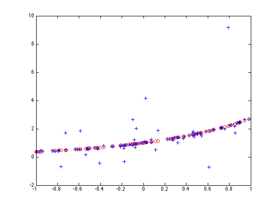
% Fit this curve with a fourth order polynomial model, of the form % % y = a1+a2*x+a3*x^2+a4*x^3+a5*x^4 % % using this fitting scheme. % % As a baseline, use polyfit with no weights. polyfit(x,y0,4) % Remember that the Taylor series for exp(x) would have had its % first few terms as [1/24 1/6 1/2 1 1] % So polyfit did reasonably well in its estimate of the truncated % Taylor series.
ans =
0.042723 0.17603 0.49988 0.99804 0.99998
ans =
0.041667 0.16667 0.5 1 1
% Note how poorly polyfit does on the noisy data.
polyfit(x,y,4)
ans =
0.53099 0.42294 0.15103 0.94505 1.089
% How would an iteratively reweighted scheme work? % initial weights weights = ones(n,1); % We will use lscov to solve the weighted regressions A = [x.^4,x.^3,x.^2,x,ones(size(x))]; % be lazy and just iterate a few times for i = 1:5 poly = lscov(A,y,weights)' % residuals at the current step resid = polyval(poly,x) - y; % find the maximum residual to scale the problem maxr = max(abs(resid)); % compute the weights for the next iteration. I'll % just pick a shape that dies off to zero for larger % values. There are many shapes to choose from. weights = exp(-(3*resid/maxr).^2); end % This was much closer to our fit with no noise
poly =
0.53099 0.42294 0.15103 0.94505 1.089
poly =
0.4204 0.18497 0.10936 0.95957 1.0423
poly =
0.4467 0.18836 0.085161 0.9553 1.0423
poly =
0.44905 0.18863 0.082914 0.95515 1.0425
poly =
0.44926 0.18864 0.08271 0.95515 1.0425
% An alternative is to transform the residuals so as to use a general % nonlinear optimization scheme, such as fminsearch. I'll transform % the residuals using a nonlinear transformation that will downweight % the outliers, then form the sum of squares of the result. % The transformation function Wfun = @(R) erf(R); % fminsearch objective obj = @(c) sum(Wfun(y-polyval(c,x)).^2); % Again, this estimation was less sensitive to the very non-normal % noise structure of our data than the simple linear least squares. poly = fminsearch(obj,[1 1 1 1 1])
poly =
0.21033 0.12223 0.34807 1.0216 0.99368
35. Homotopies
%{ Homotopies are an alternative solution for solving hard nonlinear problems. This book was a good reference as I recall, though it appears to be out of print. Garcia and Zangwill, "Pathways to Solutions, Fixed Points and Equilibria", Prentice Hall Think of a homotopy as a continuous transformation from a simple problem that you know how to solve to a hard problem that you cannot solve. For example, suppose we did not know how to solve for x, given a value of y0 here: y0 = exp(x) Yes, I'm sure that with only a few hours of work I can figure out how to use logs. But lets pretend for the moment that this is really a hard problem. I'll formulate the homotopy as H(x,t) = (y0 - exp(x))*t + (y0 - (1+x))*(1-t) So when t = 0, the problem reduces to H(x,0) = y0 - (1+x) This is a problem that we know the root of very well. I used a first order Taylor series approximation to the exponential function. So the root for t=0 is simple to find. It occurs at x = y0 - 1 As we move from t=0 to t=1, the problem deforms continuously into the more nonlinear one of our goal. At each step, the starting value comes from our last step. If we take reasonably small steps, each successive problem is quickly solved, even if we did not know of a good starting value for the hard problem initially. Lets try it out for our problem, in a rather brute force way. %}
% Define the homotopy function H = @(x,t,y0) (y0-exp(x))*t + (y0-(1+x))*(1-t); y0 = 5; % We hope to converge to the solution at % % log(5) == 1.6094379124341 format long g x_t_initial = 0; for t = 0:.1:1 x_t = fzero(@(x) H(x,t,y0),x_t_initial); disp([t,x_t_initial,x_t]) x_t_initial = x_t; end % The final step got us where we wanted to go. Note that each % individual step was an easy problem to solve. In fact, the first % step at t=0 had a purely linear objective function. log(5)
0 0 4
0.1 4 2.77445566618553
0.2 2.77445566618553 2.42485429971165
0.3 2.42485429971165 2.21531235509992
0.4 2.21531235509992 2.06683146765626
0.5 2.06683146765626 1.9526514534024
0.6 1.9526514534024 1.86041314249102
0.7 1.86041314249102 1.78338733021851
0.8 1.78338733021851 1.71750694425659
0.9 1.71750694425659 1.66012831622162
1 1.66012831622162 1.6094379124341
ans =
1.6094379124341
% Look at how the homotopic family of functions deforms from our % simple linear one to the more nonlinear one at the end. close all figure for t = 0:.1:1 fplot(@(x) H(x,t,y0),[0,4]) hold on end grid on hold off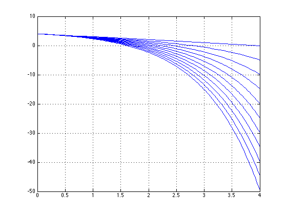
% This was admittedly a very crude example. You can even formulate % a homotopy solution that generates the multiple solutions to problem. % % Consider the problem % % sin(x) - x/5 = 0 % % We wish to find all solutions to this problem. Formulate a homotopy % function as % % H(x,t) = (sin(x) - x/5) - (1-t)*(sin(x0)-x0/5) % % Where x0 is our starting point. Choose x0 = -6. % % Note that at (x,t) = (x0,0), that H is trivially zero. Also, at % t = 1, H(x,t) is zero if x is a solution to our original problem. % % We could also have used a different homotopy. % % H(x,t) = t*(sin(x) - x/5) - (1-t)*(x-x0) x0 = -10; H = @(x,t) (sin(x) - x/5) - (1-t).*(sin(x0)-x0/5); % Generate a grid in (x,t) [x,t] = meshgrid(-10:.1:10,0:.01:1); % The solutions to sin(x) - x/5 will occur along a path (x(p),t(p)) % whenever t = 1. Solve for that path using a contour plot. contour(x,t,H(x,t),[0 0]) grid on xlabel 'x(p)' ylabel 't(p)'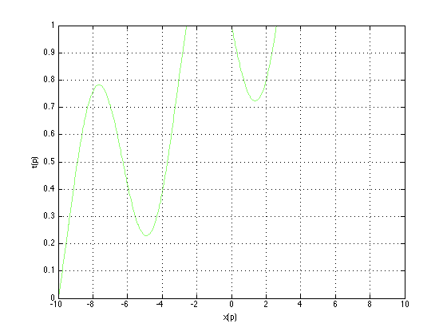
% One can also formulate a differential equation to be solved % for the homotopy path. % % H = @(x,t) (sin(x) - x/5) - (1-t).*(sin(x0)-x0/5); x0 = -10; % The Jacobian matrix dHdx = @(x,t) cos(x) - 1/5; dHdt = @(x,t) sin(x0) - x0/5; % Basic differential equations (see Garcia & Zangwill) fun = @(p,xt) [dHdt(xt(1),xt(2));-dHdx(xt(1),xt(2))]; % Solve using an ode solver solution = ode15s(fun,[0,6],[x0;0]); % This curve is the same as that generated by the contour plot above. % Note that we can find the roots of our original function by % interpolating this curve to find where it crosses t==1. plot(solution.y(1,:),solution.y(2,:)) hold on plot([min(solution.y(1,:)),max(solution.y(1,:))],[1 1],'r-') hold off grid on % These examples are just a start on how one can use homotopies to % solve problems.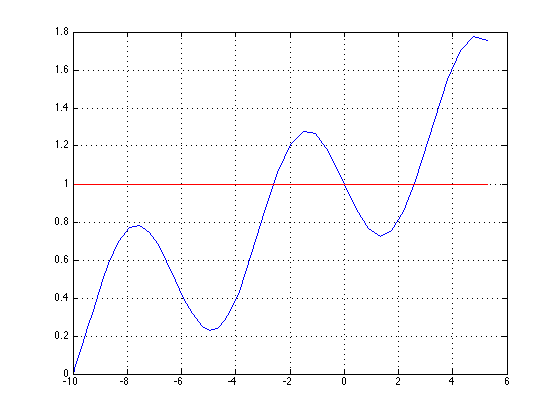
36. Orthogonal polynomial regression
%{ Orthogonal polynomials are often used in mathematical modelling. Can they be used for regression models? (Of course.) Are they of value? (Of course.) This section will concentrate on one narrow aspect of these polynomials - orthogonality. Consider the first few Legendre orthogonal polynomials. We can find a list of them in books like Abramowitz and Stegun, "Handbook of Mathematical functions", Table 22.9. P0(x) = 1 P1(x) = x P2(x) = 3/2*x.^2 - 1/2 P3(x) = 5/2*x.^3 - 3/2*x P4(x) = 4.375*x.^4 - 3.75*x.^2 + 3/8 P5(x) = 7.875*x.^5 - 8.75*x.^3 + 1.875*x ... These polynomials have the property that over the interval [-1,1], they are orthogonal. Thus, the integral over that interval of the product of two such polynomials Pi and Pj will be zero whenever i and j are not equal. Whenever i == j, the corresponding integral will evaluate to 1. However, the mere use of orthogonal polynomials on discrete data will not generally result in orthogonality in the linear algebra. For example ... %} % We can ortho-normalize the polynomials above by multiplying % the i'th polynomial by sqrt((2*i+1)/2) P0 = @(x) ones(size(x))*sqrt(1/2); P1 = @(x) x*sqrt(3/2); P2 = @(x) (3/2*x.^2 - 1/2)*sqrt(5/2); P3 = @(x) (5/2*x.^3 - 3/2*x)*sqrt(7/2); P4 = @(x) (3/8 - 3.75*x.^2 + 4.375*x.^4)*sqrt(9/2); P5 = @(x) (1.875*x - 8.75*x.^3 + 7.875*x.^5)*sqrt(11/2); % Thus if we integrate over the proper domain, this one should % return zero (to within the tolerance set by quad): quad(@(x) P1(x).*P4(x),-1,1)
ans =
2.77555756156289e-17
% But this integral should return unity:
quad(@(x) P3(x).*P3(x),-1,1)
ans =
1.00000001736801
% Now, lets look at what will happen in a regression context. % Consider an equally spaced vector of points x0 = (-1:.001:1)'; % Do these polynomials behave as orthogonal functions when % evaluated over a discrete set of points? NO. A = [P0(x0),P1(x0),P2(x0),P3(x0),P4(x0),P5(x0)]; % Note that the matrix A'*A should be a multiple of an identity % matrix if the polynomials are orthogonal on discrete data. Here we % see that A'*A is close to an identity matrix. A'*A
ans =
1000.5 -9.2370555648813e-14 1.11859300574424 7.105427357601e-15 1.50249999956248 -7.105427357601e-15
-9.2370555648813e-14 1001.5005 -7.105427357601e-14 2.29396101625142 -1.4210854715202e-14 2.87994073426673
1.11859300574424 -7.105427357601e-14 1002.50249999963 5.6843418860808e-14 3.3613691815863 -2.8421709430404e-14
7.105427357601e-15 2.29396101625142 5.6843418860808e-14 1003.50699999446 0 4.4028383448115
1.50249999956248 -1.4210854715202e-14 3.3613691815863 0 1004.51499996362 5.6843418860808e-14
-7.105427357601e-15 2.87994073426673 -2.8421709430404e-14 4.4028383448115 5.6843418860808e-14 1005.52749984279
% An interesting thing to try is this same operation on a carefully % selected set of points (see Engels, "Numerical Quadrature and Cubature", % Academic Press, 1980, Table 2.4.3, page 58.) x = [0.16790618421480394; 0.52876178305787999;... 0.60101865538023807; 0.91158930772843447]; x = [-x;0;x]; A = [P0(x),P1(x),P2(x),P3(x),P4(x),P5(x)]; % This time, A'*A has all (essentially) zero off-diagonal terms, % reflecting the use of a set of quadrature nodes for the sample points. A'*A % The point to take from this excursion is that orthogonal polyomials % are not always orthogonal when sampled at dscrete points.
ans =
4.5 -1.11022302462516e-16 -3.33066907387547e-16 1.11022302462516e-16 -1.11022302462516e-16 4.16333634234434e-17
-1.11022302462516e-16 4.5 0 6.66133814775094e-16 -1.11022302462516e-16 -1.13797860024079e-15
-3.33066907387547e-16 0 4.5 0 -1.11022302462516e-16 -4.16333634234434e-17
1.11022302462516e-16 6.66133814775094e-16 0 4.5 1.11022302462516e-16 1.11022302462516e-16
-1.11022302462516e-16 -1.11022302462516e-16 -1.11022302462516e-16 1.11022302462516e-16 4.5 -8.32667268468867e-17
4.16333634234434e-17 -1.13797860024079e-15 -4.16333634234434e-17 1.11022302462516e-16 -8.32667268468867e-17 1.11544189453125
37. Potential topics to be added or expanded in the (near) future
%{ I've realized I may never finish writing this document. There will always be segments I'd like to add, expound upon, clarify. So periodically I will repost my current version of the doc, with the expectation that I will add the pieces below as the muse strikes me. Some ideas for new chapters are: - Scaling problems - identifying and fixing them - More discussion on singular matrix warnings - Multi-criteria optimization - Using output functions - List of references - Jackknife/Bootstrap examples for confidence intervals on a regression %} close all